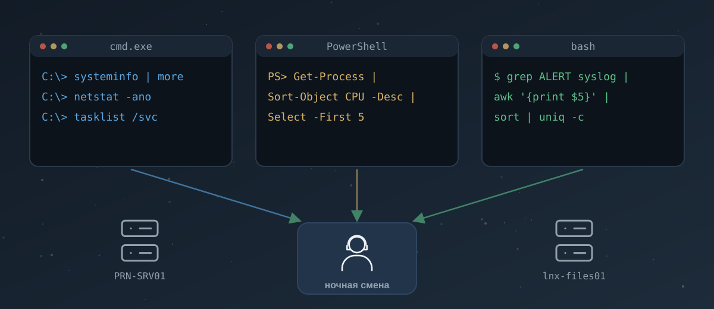

Учебник: Command Line
Модуль: Cyber Security 101 · Комнаты: Windows Command Line, Windows PowerShell, Linux Shells.
Что будешь уметь после учебника:
- открыть командную строку Windows, PowerShell или Терминал и не теряться: понять, где ты, под какой учёткой и на какой машине;
- за пару минут собрать с компьютера то, что нужно для тикета: версию системы, адреса, открытые порты, запущенные программы и службы, хэш файла;
- отфильтровать длинный вывод до нескольких нужных строк — в cmd, в PowerShell и в Linux;
- прочитать и написать короткий скрипт на bash и понять, что делает чужой;
- отличать нормальную работу админов и плановых задач от того, что надо копать, и коротко доложить об этом по-немецки.
Маршрут:
- 🧪 Windows Command Line — пройди: в комнате своя Windows-машина, на маке её нет. Прочитай главу 1 → пройди комнату → вернись к «Сделай сам». ~45 мин.
- 🧪 Windows PowerShell — пройди: там живая Windows с заданиями на поиск учёток, файлов и хэшей; это лучшая тренировка перед SIEM. ~60 мин.
- 🤔 Linux Shells — по желанию: всё из комнаты ты повторишь в Терминале мака по главе 3. Комната нужна, если хочешь галочку в пути Cyber Security 101. ~45 мин.
- Главы: 3 обязательных 🔥. Практика — в конце, на настоящем журнале Linux.

Вспомни прошлое
Пять вопросов из прошлых учебников. Не помнишь — нормально: под ответом объяснение.
/etc/os-release написано ID=rocky и ID_LIKE="rhel centos fedora". Где искать входы по SSH?SubStatus 0xC000006A. Что случилось?svchost.exe запущен из C:\Users\Public\. Почему это сразу вопрос?192.168.20.15 в логе. Что можно сказать сразу?Пролог: ночная смена в Kranich Druck
22:10, Nachtschicht (ночная смена, 22:00–06:00). Учебная фирма Kranich Druck GmbH (типография в Фюрте, выдуманная). 120 сотрудников, файловый сервер, ноутбуки офиса и пара Linux-серверов для сайта и почты. Днём здесь работает своя IT-команда из трёх человек, ночью за всем смотришь ты.
Фирма, машины и учётки выдуманы. Внутренние адреса взяты из частных диапазонов, внешние — из диапазонов, которые специально отведены для примеров. Настоящий журнал будет в главе 3 и в практике, там всегда сказано, что он настоящий.
За ночь в очереди три алерта. Каждый выглядит как начало атаки, и каждый ты проверяешь командной строкой:
- Глава 1. 22:10 — на файловом сервере FUE-FS01 подряд запустились
systeminfo,ipconfig,netstat. Правило SIEM называется «разведка системы командами». - Глава 2. 01:30 — PowerShell с сервера управления подключился к ноутбуку бухгалтерии FUE-WS07.
- Глава 3. 04:06 — на почтовом Linux-сервере кто-то каждую ночь переключается на служебные учётки.
Три слова, без которых пролог не понять. SIEM (Security Information and Event Management) — система, которая собирает журналы со всех машин фирмы в одно место и по правилам поднимает алерты — сигналы «посмотри сюда». EDR (Endpoint Detection and Response) — программа-охранник на каждом компьютере: записывает, что запускалось, кем и откуда. L1 — первая линия SOC, то есть ты: принимаешь алерты, проверяешь и решаешь, закрыть или передать дальше (L2).
Главная мысль этой ночи: большинство алертов на смене — нормальная работа админов и плановых задач. Работа L1 — доказать это фактами или найти то, что в норму не вписывается. Для этого надо знать, как норма выглядит.
Глава 1. Командная строка Windows (Windows Command Line)
Аналогия
Мышка и окна — это меню в ресторане с картинками: удобно, пока выбираешь из того, что нарисовали. Командная строка — разговор с поваром напрямую: «три яйца, без соли, и покажи, что у тебя в холодильнике». Картинок нет, зато можно спросить ровно то, что нужно, и получить ответ сразу.
На серверах меню с картинками часто нет совсем или до него долго добираться. Повар есть всегда.
Ты на смене
22:10. Алерт из SIEM: «Учебный алерт: разведка системы командами — systeminfo.exe, ipconfig.exe, netstat.exe за 20 секунд, хост FUE-FS01, учётка KRANICH\adm.weber». FUE-FS01 — файловый сервер, на нём общие папки всей фирмы.
Так начинает почти любой взломщик: попал на машину — сначала осматривается. Но ровно так же начинает и админ, и программа инвентаризации. Тебе надо ответить на четыре вопроса:
- Что это за машина и кто такой adm.weber?
- Какие именно команды запускались и кто их запустил — человек руками или программа?
- С кем машина сейчас общается по сети?
- Это бывало раньше в то же время?
Всё, что ниже, — инструменты для этих ответов. Вердикт по алерту — в конце главы.
Сначала слова, без которых дальше не понять
Домен (domain). Общая система учёток компании: один логин работает на всех компьютерах фирмы, а управляет этим главный сервер — контроллер домена. В Windows это Active Directory. Поэтому учётку пишут как домен\имя: KRANICH\adm.weber.
Командная строка (command line, CLI — command-line interface). Окно, где компьютером управляют текстом: пишешь команду, жмёшь Enter, получаешь ответ текстом. На маке это Терминал.
Оболочка (shell), она же интерпретатор команд. Программа, которая живёт в этом окне: читает то, что ты набрал, понимает и выполняет. В Windows их две: старая cmd (файл cmd.exe) и новая PowerShell (глава 2). Окно — это телефонная трубка, оболочка — тот, кто на другом конце.
Команда. Слово, которое оболочка понимает как приказ: hostname — «назови своё имя». Часто команда — это просто маленькая программа в C:\Windows\System32, например ipconfig.exe.
Ключ (switch, параметр). Уточнение к команде, в cmd пишется через косую черту: dir /a — «покажи папку, включая скрытые файлы». Ключ меняет поведение команды, как «без соли» меняет заказ.
Аргумент. То, над чем команда работает: type notes.txt — показать файл notes.txt. Имя файла здесь аргумент.
Вывод (output). Текст, который команда напечатала в ответ. Его читаешь глазами, сохраняешь в файл или передаёшь следующей команде.
Путь (path). Полный адрес файла: C:\Users\adm.weber\Desktop\list.txt — диск C, папка Users, папка adm.weber и так далее. По пути видно, нормальное ли это место для файла.
Переменная окружения (environment variable). Именованная настройка, которую Windows держит для каждой программы: USERNAME — кто ты, COMPUTERNAME — имя машины, Path — список папок, где искать программы. Как стикеры на холодильнике, которые читает каждый в доме.
Процесс и PID. Процесс — запущенная программа. Файл notepad.exe лежит на диске и ничего не делает, открыл Блокнот — появился процесс. У каждого процесса свой номер PID (process ID), по нему процесс находят и останавливают.
Служба (service). Программа, которая работает в фоне без окна и обычно стартует вместе с Windows: печать, обновления, общие папки. У службы есть короткое имя, например Spooler (служба печати).
IP-адрес и порт. IP-адрес — номер компьютера в сети, как номер дома. Порт — номер двери в этом доме, за каждой дверью своя служба: 445 — общие папки Windows, 443 — сайты по HTTPS. «Слушает порт» значит «стоит у двери и ждёт гостей».
MAC-адрес. Заводской номер сетевой карты, вида 00-15-5D-0A-14-21. IP может меняться, MAC обычно нет — по нему устройство находят в сети.
SSH (Secure Shell). Способ подключиться к другому компьютеру и работать в его командной строке через сеть, всё шифруется. В комнате ты так зайдёшь на её Windows-машину.
Администратор и «Запуск от имени администратора». Даже админ работает в Windows с урезанными правами, пока не попросит больше. Некоторые команды (sfc, netstat -b) без повышенных прав отказываются работать.
Открыть cmd и понять, где ты
Зачем на смене: первое, что делаешь на чужой машине, — проверяешь, на какой ты машине и под какой учёткой. Иначе однажды проверишь не тот сервер.
Аналогия: приглашение командной строки — табличка над дверью кабинета: чей кабинет и на каком этаже.
Как устроено. Открыть cmd на Windows: Win+R → cmd → Enter. Или Пуск → «Командная строка». Нужны права админа — правой кнопкой → «Запуск от имени администратора». В комнате THM ты заходишь на Windows-машину по SSH, и cmd откроется сразу:
ssh user@10.10.37.112
Адрес машины комната покажет сама, у тебя будет другой. Первый раз SSH спросит, доверяешь ли ты этой машине, — пиши yes, потом пароль из задания (при вводе пароля символы не видны, это нормально).
После входа ты видишь приглашение (prompt):
C:\Users\user>
Это значит: «я готов, пиши; ты сейчас в папке C:\Users\user». Знак > — конец приглашения. В заголовке окна, запущенного от администратора, написано «Администратор: Командная строка» — это тоже стоит замечать.
Первые четыре команды:
C:\Users\user>hostname
FUE-FS01
C:\Users\user>whoami
kranich\adm.weber
C:\Users\user>ver
Microsoft Windows [Version 10.0.20348.2655]
C:\Users\user>cls
hostname— имя машины.whoami— учётка в видедомен\имя. Если вместо домена имя самой машины (fue-fs01\admin), это локальная учётка — она есть только на этом компьютере.ver— версия Windows.10.0.20348— это номер сборки (build): 20348 — Windows Server 2022, 22631 — Windows 11 23H2, 19045 — Windows 10 22H2. Номер сборки точнее названия.cls— очистить экран.
Справка и аварийный стоп. Почти у каждой команды есть встроенная справка: команда с ключом /?, например dir /? (у netstat работает и -h). Список встроенных команд cmd — help. Команда зависла или печатает бесконечно — Ctrl+C останавливает её.
Варианты, которые встретятся:
- На немецкой Windows приглашение то же, а заголовок окна — «Administrator: Eingabeaufforderung». Eingabeaufforderung — так по-немецки называется командная строка.
- Если ты зашёл по SSH, окно может открыться сразу в PowerShell, а не в cmd. Отличишь по приглашению: в PowerShell оно начинается с
PS(PS C:\Users\user>). Перейти в cmd — набратьcmd, вернуться —exit.
Если не получилось:
ssh: connect to host … Connection timed out— машина в комнате ещё загружается (подожди 1–2 минуты) или ты не подключён к сети THM. В комнате с машиной в браузере это не нужно, а для своего Терминала нужен VPN THM или AttackBox.Permission denied, please try again.— опечатка в пароле или имени. Пароль вводится вслепую — набирай медленно.'hostnme' is not recognized as an internal or external command— опечатка в команде. Немецкая Windows пишет «… ist entweder falsch geschrieben oder konnte nicht gefunden werden».
Ошибка новичка: открыть cmd без прав администратора и решить, что команда «не работает». Сообщение Access is denied. (по-немецки «Zugriff verweigert») — это не поломка, а нехватка прав.
Переменные окружения: set
Зачем на смене: в переменных видно, кто ты, где твоя домашняя папка и откуда Windows берёт программы. Когда атакующий подкладывает свою программу под именем системной, он рассчитывает именно на Path.
Аналогия: Path — список полок, по которым Windows ищет программу, когда ты называешь её по имени. Идёт по полкам по порядку и берёт первую подходящую.
Как устроено. set без аргументов печатает все переменные. С началом имени — только подходящие:
C:\Users\user>set USER
USERDOMAIN=KRANICH
USERNAME=adm.weber
USERPROFILE=C:\Users\adm.weber
C:\Users\user>set Path
Path=C:\Windows\system32;C:\Windows;C:\Windows\System32\Wbem;C:\Windows\System32\WindowsPowerShell\v1.0\;C:\Users\adm.weber\AppData\Local\Microsoft\WindowsApps;
PATHEXT=.COM;.EXE;.BAT;.CMD;.VBS;.VBE;.JS;.JSE;.WSF;.WSH;.MSC
set Path показал две переменные: всё, что начинается с «Path». Читаем:
| Переменная | Что значит | Зачем тебе |
|---|---|---|
USERNAME, USERDOMAIN |
учётка и домен | то же, что whoami |
USERPROFILE |
домашняя папка учётки | отсюда пути Desktop, Downloads, AppData |
Path |
папки, где искать программы, через ; |
папка из профиля пользователя в начале Path — повод присмотреться |
PATHEXT |
какие расширения считаются запускаемыми | видно, что .bat, .cmd, .vbs, .js — тоже программы |
COMPUTERNAME |
имя машины | то же, что hostname |
Значение одной переменной вставляется в команду через проценты: echo %USERPROFILE% напечатает C:\Users\adm.weber.
Варианты: set показывает переменные этого окна. Программа, поменявшая переменную у себя, другим окнам об этом не скажет. Постоянные настройки лежат в «Система → Дополнительные параметры → Переменные среды».
Если не получилось: Environment variable Pat not defined — переменной с таким началом нет, проверь букву.
Ошибка новичка: путать set Path и path. Команда path тоже печатает Path, но path C:\что-то его заменяет в этом окне. Смотри через set.
Что за машина: systeminfo и driverquery
Зачем на смене: в тикет пишут версию системы, когда она последний раз загружалась и в каком домене. Перезагрузка час назад посреди ночи — сама по себе вопрос.
Аналогия: systeminfo — техпаспорт машины: модель, год, пробег, последняя замена масла.
Как устроено. systeminfo опрашивает Windows и печатает около 40 строк. Думает 10–20 секунд — это нормально.
C:\Users\user>systeminfo
Host Name: FUE-FS01
OS Name: Microsoft Windows Server 2022 Standard
OS Version: 10.0.20348 N/A Build 20348
OS Configuration: Member Server
Registered Owner: Kranich Druck IT
Original Install Date: 03.02.2025, 10:14:22
System Boot Time: 09.11.2026, 06:02:41
System Manufacturer: VMware, Inc.
Domain: kranich.local
Hotfix(s): 3 Hotfix(s) Installed.
[01]: KB5044281
...
Network Card(s): 1 NIC(s) Installed.
[01]: vmxnet3 Ethernet Adapter
IP address(es)
[01]: 10.0.10.21
Пример учебный, по сюжету. Что из этого брать:
| Строка | Что значит | Когда нужна |
|---|---|---|
OS Name, OS Version |
система и сборка | всегда в тикет |
OS Configuration |
рабочая станция, рядовой сервер (Member Server) или контроллер домена |
контроллер домена — самый ценный сервер сети, приоритет выше |
System Boot Time |
последняя загрузка | неожиданная перезагрузка, сверка с алертом |
System Manufacturer |
железо или виртуальная машина (VMware, Microsoft Corporation у Hyper-V) |
понять, где стоит машина |
Domain |
домен или WORKGROUP |
машина вне домена в офисе — странно |
Hotfix(s) |
установленные обновления (KB — номер обновления) | давно нет новых — машина не обновляется |
Network Card(s) |
сетевые карты и адреса | быстрый ответ «какой у неё IP» |
Длинный вывод листают постранично: systeminfo | more — пробел листает страницу, Enter — строку, q — выход. Знак | — конвейер: «отдай вывод левой команды правой». Подробно и с поиском по словам — в «Копнуть глубже» в конце главы.
driverquery печатает список драйверов — маленьких программ, через которые Windows говорит с железом: диском, сетевой картой, принтером. На смене нужен редко: для проверки, не поставили ли незнакомый драйвер.
Варианты: на немецкой Windows строки по-немецки: Hostname, Betriebssystemname, Betriebssystemversion, Systemstartzeit, Domäne. Если фильтруешь по слову (дальше научишься), ищи по немецкому слову.
Если не получилось: на машине с чужим языком ищешь Boot Time и получаешь пустоту — не потому что строки нет, а потому что она называется иначе. Запасной путь без языка — PowerShell, глава 2: Get-ComputerInfo.
Ошибка новичка: записать в тикет «Windows 10», глядя на 10.0 в OS Version. У Windows Server 2022 и Windows 11 тоже 10.0. Смотри на OS Name и сборку.
В тикет:
FUE-FS01: Windows Server 2022 Standard, Build 20348, Member Server, Domäne kranich.local, letzter Boot 09.11.2026 06:02.
Сеть: ipconfig, ping, tracert, nslookup
Зачем на смене: в алерте почти всегда есть адрес. Надо уметь быстро понять, какой адрес у самой машины, через что она выходит в сеть, видит ли она другой адрес и в какое имя он превращается.
Аналогия: ipconfig — твой адрес и номер почтового отделения. ping — постучать в дверь соседу: «ты дома?». tracert — маршрут письма через все почтовые отделения. nslookup — справочная: «какой адрес у фирмы Example?».
ipconfig
C:\Users\user>ipconfig /all
Windows IP Configuration
Host Name . . . . . . . . . . . . : FUE-FS01
Primary Dns Suffix . . . . . . . : kranich.local
Ethernet adapter Ethernet0:
Description . . . . . . . . . . . : vmxnet3 Ethernet Adapter
Physical Address. . . . . . . . . : 00-50-56-8A-14-21
DHCP Enabled. . . . . . . . . . . : No
IPv4 Address. . . . . . . . . . . : 10.0.10.21(Preferred)
Subnet Mask . . . . . . . . . . . : 255.255.255.0
Default Gateway . . . . . . . . . : 10.0.10.1
DNS Servers . . . . . . . . . . . : 10.0.10.5
Без ключа ipconfig показывает только адрес, маску и шлюз. С /all — всё:
| Поле | Что значит | Зачем тебе |
|---|---|---|
Physical Address |
MAC-адрес карты | найти устройство в журналах сети и DHCP |
DHCP Enabled |
получает ли адрес автоматически | No у сервера — норма: серверам ставят постоянный адрес |
IPv4 Address |
адрес машины | сверить с адресом в алерте |
Default Gateway |
шлюз — дверь из своей сети наружу, обычно роутер | весь трафик в интернет идёт через него |
DNS Servers |
кого машина спрашивает про имена | чужой DNS-сервер на офисной машине — серьёзный сигнал |
ping
C:\Users\user>ping 10.0.10.5
Pinging 10.0.10.5 with 32 bytes of data:
Reply from 10.0.10.5: bytes=32 time<1ms TTL=128
Reply from 10.0.10.5: bytes=32 time<1ms TTL=128
Reply from 10.0.10.5: bytes=32 time<1ms TTL=128
Reply from 10.0.10.5: bytes=32 time<1ms TTL=128
Ping statistics for 10.0.10.5:
Packets: Sent = 4, Received = 4, Lost = 0 (0% loss),
В Windows ping по умолчанию стучит 4 раза и останавливается (на маке и Linux — бесконечно, до Ctrl+C). time — сколько миллисекунд шёл ответ. TTL (time to live) — «срок жизни» пакета: каждый роутер по пути уменьшает его на 1. Windows отправляет с 128, Linux — с 64, поэтому TTL=128 намекает на Windows, TTL=64 — на Linux.
Request timed out. не значит «машина выключена». Часто её файрвол (программа-сторож, которая решает, какие сетевые пакеты пропускать) просто не отвечает на ping. Это нормально для многих серверов.
tracert
C:\Users\user>tracert -d 198.51.100.7
Tracing route to 198.51.100.7 over a maximum of 30 hops
1 <1 ms <1 ms <1 ms 10.0.10.1
2 3 ms 2 ms 3 ms 203.0.113.1
3 * * * Request timed out.
4 12 ms 11 ms 12 ms 198.51.100.7
Каждая строка — хоп, один роутер на пути (устройство, которое передаёт пакеты из сети в сеть, как почтовое отделение). Три числа — три замера времени. * — этот роутер не ответил, но пропустил дальше, это нормально. -d — не переводить адреса в имена, так быстрее.
nslookup
C:\Users\user>nslookup example.com
Server: dc01.kranich.local
Address: 10.0.10.5
Non-authoritative answer:
Name: example.com
Addresses: 2606:2800:21f:cb07:6820:80da:af6b:8b2c
93.184.215.14
Первые две строки — кого спросили (DNS-сервер фирмы). Non-authoritative answer — «отвечаю по памяти, а не как хозяин этого имени», это нормально. Дальше — адреса. Адреса example.com на момент написания такие; если у тебя другие — сайт мог переехать.
Спросить другой DNS-сервер — вторым аргументом: nslookup example.com 1.1.1.1. Так проверяют, не врёт ли свой DNS: ответы обоих должны совпасть.
Варианты: на маке те же команды есть, кроме tracert — там traceroute, а вместо ipconfig — ifconfig или ipconfig getifaddr en0.
Если не получилось:
ping: transmit failed. General failure.— у машины нет сети вообще, проверьipconfig.*** dc01.kranich.local can't find example.com: Non-existent domain— такого имени нет (или опечатка). Для фишинговых доменов-однодневок это тоже ответ: домен уже удалён.DNS request timed out.— DNS-сервер не отвечает. Спроси другой, например1.1.1.1.
Ошибка новичка: пинговать подозрительный внешний адрес с рабочей машины «чтобы проверить». Ты тем самым стучишься к атакующему со своей сети. Внешние адреса проверяют в сервисах репутации, а не ping.
Кто с кем говорит: netstat
Зачем на смене: «с какими адресами машина общается прямо сейчас и какая программа держит соединение» — главный сетевой вопрос по любому хосту. Ответ даёт netstat.
Аналогия: netstat — журнал вахтёра: какие двери открыты, кто сейчас в гостях и кто кого пригласил.
Как устроено. Ключи, которые склеивают в одно слово:
| Ключ | Что делает |
|---|---|
-a |
все соединения и все порты, которые слушают |
-n |
адреса и порты числами, без перевода в имена — быстрее и точнее |
-o |
PID процесса, которому принадлежит соединение |
-b |
имя программы (нужны права администратора) |
C:\Users\user>netstat -ano
Active Connections
Proto Local Address Foreign Address State PID
TCP 0.0.0.0:135 0.0.0.0:0 LISTENING 912
TCP 0.0.0.0:445 0.0.0.0:0 LISTENING 4
TCP 0.0.0.0:3389 0.0.0.0:0 LISTENING 1104
TCP 10.0.10.21:445 10.0.10.57:50322 ESTABLISHED 4
TCP 10.0.10.21:49712 10.0.10.5:389 ESTABLISHED 688
UDP 0.0.0.0:123 *:* 1288
Пример учебный. Наведи на поля строки:
Как читать всю таблицу:
| Что видишь | Что значит | Когда насторожиться |
|---|---|---|
LISTENING на 0.0.0.0:порт |
служба ждёт гостей со всех сторон | незнакомый порт, особенно большой, у незнакомой программы |
LISTENING на 127.0.0.1:порт |
служба только для самой машины | обычно не опасно |
ESTABLISHED с частным адресом |
разговор внутри сети | рабочая станция ходит на много других станций по 445 |
ESTABLISHED с публичным адресом |
разговор с интернетом | сервер сам ходит в интернет туда, куда никогда не ходил |
Кто держит порт. PID ничего не говорит сам по себе. Два пути:
C:\Windows\system32>netstat -abon
UDP 0.0.0.0:123 *:* 1288
W32Time
[svchost.exe]
TCP 0.0.0.0:445 0.0.0.0:0 LISTENING 4
Can not obtain ownership information
С -b под строкой появляется программа в квадратных скобках, а иногда и служба: порт 123 держит служба времени W32Time внутри svchost.exe. У порта 445 программы нет — его обслуживает ядро (PID 4), и netstat честно пишет, что владельца-программы не нашёл. Второй путь — по PID через tasklist (следующий раздел). Какие именно службы стоят за портами в комнате — найди сам этими двумя способами.
Вывод большой, и его режут: netstat -ano | findstr LISTENING — только слушающие порты; netstat -ano | findstr :445 — только строки с портом 445. Про findstr — в «Копнуть глубже».
Варианты: на маке netstat -an тоже есть, но без PID; на маке и Linux удобнее lsof -i -P -n или ss -tunap (Linux). В PowerShell — Get-NetTCPConnection, глава 2.
Если не получилось:
The requested operation requires elevation.— ключ-bбез прав администратора. Перезапусти окно от администратора или используй-o+tasklist.- Вывод думает долго — забыл
-n, и netstat переводит каждый адрес в имя. Ctrl+C и добавьn.
Ошибка новичка: считать подозрительным PID 4 или процесс svchost.exe у порта. Это норма: многие службы Windows живут внутри svchost.exe, а общие папки — в ядре. Подозрительна незнакомая программа из незнакомого места.
В тикет:
netstat -ano auf FUE-FS01 (22:24): nur interne Verbindungen (10.0.10.0/24), keine Verbindungen ins Internet, keine unbekannten Listener.
Файлы и папки: cd, dir, tree, type
Зачем на смене: EDR пишет «файл C:\Scripts\inventar.cmd». Надо дойти до него, посмотреть, что рядом, и прочитать содержимое, ничего не запуская.
Аналогия: cd — перейти в комнату, dir — оглядеться, tree — план этажа, type — прочитать записку, не выполняя написанного.
Как устроено.
C:\Users\user>cd C:\Scripts
C:\Scripts>dir
Volume in drive C has no label.
Directory of C:\Scripts
12.11.2026 21:58 <DIR> .
12.11.2026 21:58 <DIR> ..
04.03.2026 09:12 412 inventar.cmd
12.11.2026 22:00 8 931 inventar_2026-11-12.txt
2 File(s) 9 343 bytes
cd путь— перейти;cd ..— на папку вверх;cdбез аргумента — показать, где ты.- Смена диска — отдельно:
D:и Enter.cd D:\Datenс диска C не перейдёт, нужноcd /d D:\Daten. - В
dir: дата и время последнего изменения,<DIR>— это папка, число — размер в байтах..— текущая папка,..— родительская.
Полезные ключи dir:
| Ключ | Что делает | Когда нужен |
|---|---|---|
/a |
показать и скрытые, и системные файлы | атакующие и программы любят скрытые файлы |
/s |
пройти и по всем подпапкам | найти файл по имени где угодно: dir C:\Users\*.cmd /s |
/o:d |
сортировать по дате: старые сверху, новые внизу (/o:-d — наоборот) |
что поменялось последним |
/q |
показать владельца файла | кто создал файл |
* — маска, «любые символы»: *.txt — все текстовые файлы, inventar* — всё, что начинается на inventar.
C:\Scripts>type inventar.cmd
@echo off
rem Inventar fuer IT-Doku, Aufgabe "IT-Inventar" taeglich 22:00
systeminfo > C:\Scripts\inventar_%DATE%.txt
ipconfig /all >> C:\Scripts\inventar_%DATE%.txt
netstat -ano >> C:\Scripts\inventar_%DATE%.txt
Вот и ответ на половину алерта: три команды из правила SIEM лежат в скрипте инвентаризации. rem — комментарий, > — записать вывод в файл, >> — дописать в конец. Скрипты .cmd и .bat — просто списки команд cmd, их можно прочитать type.
Для больших файлов — more файл (постранично). tree рисует структуру папок; tree /f — вместе с файлами. На большом диске tree C:\ /f будет печатать минуты — останавливай Ctrl+C.
Менять файлы — команды, которые на чужой машине L1 обычно не использует, но знать их надо, и в комнате они нужны:
| Команда | Что делает |
|---|---|
mkdir имя |
создать папку |
rmdir имя |
удалить пустую папку; rmdir /s имя — вместе с содержимым |
copy откуда куда |
копировать файл |
move откуда куда |
переместить или переименовать |
del файл (то же, что erase) |
удалить файл, мимо Корзины |
Варианты: пути с пробелами — в кавычках: cd "C:\Program Files". Без кавычек cmd поймёт C:\Program и споткнётся.
Если не получилось:
The system cannot find the path specified.— опечатка в пути или ты на другом диске.File Not Foundуdir— маска ничего не нашла, это тоже ответ.Access is denied.— нужно окно администратора, а к некоторым папкам (C:\System Volume Information) нет доступа даже у него.
Ошибка новичка: «проверить» скрипт, запустив его. Запуск выполнит всё, что в нём написано. Читают через type или more, а для чужих подозрительных файлов — только в изолированной среде и по процедуре.
Ошибка новичка 2: забыть, что del удаляет без Корзины. На машине из инцидента ничего не удаляй — это улики.
Процессы: tasklist и taskkill
Зачем на смене: «что сейчас запущено и от чьего имени» — второй главный вопрос по хосту после сети. По PID из netstat здесь находишь программу.
Аналогия: tasklist — список всех, кто сейчас в здании, с номерами пропусков. taskkill — вывести человека за дверь по номеру пропуска.
Как устроено.
C:\Users\user>tasklist
Image Name PID Session Name Session# Mem Usage
========================= ======== ================ =========== ============
System Idle Process 0 Services 0 8 K
System 4 Services 0 140 K
smss.exe 356 Services 0 1 220 K
services.exe 652 Services 0 9 870 K
lsass.exe 688 Services 0 21 412 K
svchost.exe 912 Services 0 14 300 K
explorer.exe 4120 RDP-Tcp#3 2 98 120 K
cmd.exe 5216 RDP-Tcp#3 2 4 104 K
| Колонка | Что значит | Зачем тебе |
|---|---|---|
Image Name |
имя файла программы | что запущено |
PID |
номер процесса | связать с netstat |
Session Name |
Services — фон, Console — человек за экраном, RDP-Tcp#N — человек по удалённому рабочему столу |
понять, сидит ли кто-то на машине |
Mem Usage |
память в КБ | редко нужно |
Самые полезные ключи:
C:\Users\user>tasklist /fi "imagename eq cmd.exe"
C:\Users\user>tasklist /fi "pid eq 1288" /svc
C:\Users\user>tasklist /v /fi "username eq KRANICH\adm.weber"
/fi "…"— фильтр:imagename eq(имя равно),pid eq,username eq,status eq running.eq— равно,ne— не равно; для чисел ещёgt/lt(больше/меньше), например"memusage gt 100000"./svc— какие службы живут в процессе. Так узнаёшь, чтоsvchost.exeс PID 1288 — это служба времениW32Time./v— подробно, с учёткой и заголовком окна.
C:\Users\user>tasklist /fi "pid eq 1288" /svc
Image Name PID Services
========================= ======== ============================================
svchost.exe 1288 W32Time
taskkill /PID 5216 — попросить процесс завершиться, taskkill /PID 5216 /F — принудительно, taskkill /IM notepad.exe — по имени (все с этим именем).
Варианты: у tasklist нет родителя процесса и командной строки — кто запустил и с какими ключами. Это есть в EDR, в Sysmon и в PowerShell (глава 2). На маке и Linux аналог — ps aux.
Если не получилось:
INFO: No tasks are running which match the specified criteria.— фильтр ничего не нашёл: такого процесса нет или опечатка в кавычках (imagename eq notepad.exe, с.exe).ERROR: The process with PID 5216 could not be terminated. Reason: Access is denied.— процесс другой учётки или системный, нужно окно администратора.
Ошибка новичка: «убить» подозрительный процесс на рабочей машине самому. На смене L1 обычно не трогает процессы на чужом компьютере: убийство стирает следы из памяти и может уронить сервер. Сначала зафиксировать (PID, имя, путь, время) и эскалировать по процедуре. taskkill в комнате — для учёбы.
Норма, чтобы увидеть отклонение: кто родитель cmd
Зачем на смене: имя cmd.exe в алерте ничего не говорит. Говорит родитель — процесс, который его запустил. В SIEM это поле ParentImage или ParentProcessName.
Аналогия: важно не то, что человек вошёл в серверную, а кто его привёл. Привёл админ — обычная работа. Привёл курьер с пиццей — вопрос.
Как устроено. Запускаешь программу — Windows записывает, кто её запустил. Так получается дерево процессов. Где его видно: в журнале событий Windows (дневник, куда система сама записывает события; в разделе Security — события безопасности) событие 4688 «создан процесс» — пишется, только если включён аудит, а командная строка — отдельной настройкой. Ещё — в Sysmon (бесплатная программа Microsoft, которая подробно записывает запуски, соединения и файлы), событие 1, и в консоли EDR.
Как выглядела ночь на FUE-FS01 по данным EDR:
Нажми на узлы — увидишь командные строки. Читаем снизу вверх: три команды → их запустил cmd.exe со скриптом → его запустил Планировщик заданий (svchost.exe … -s Schedule) → его — services.exe. Человек за клавиатурой в этой цепочке не участвовал.
Родитель cmd.exe |
Что это обычно | Как проверить |
|---|---|---|
explorer.exe |
человек сам открыл окно | есть ли вход этой учётки (4624 — событие «удачный вход») в это время |
svchost.exe … -s Schedule |
задача планировщика | schtasks /query /tn "имя" или список задач |
services.exe |
служба запустила скрипт | какая служба, давно ли установлена |
| Word, Excel, браузер, почтовая программа | документ или страница запустили оболочку | сразу копать: так начинаются фишинговые заражения |
Варианты: у программ установки и обновлений (msiexec.exe, агенты управления вроде SCCM) дочерний cmd.exe — норма. Сверяй с соседними машинами: если так на всех двадцати серверах каждую ночь — это фон.
Если не получилось: в 4688 нет командной строки — значит, в фирме не включена её запись. Пиши в тикет «Kommandozeile nicht protokolliert» и смотри EDR.
Ошибка новичка: проверить только имя. cmd.exe из C:\Windows\System32 с родителем-планировщиком и cmd.exe, запущенный Word, — один и тот же файл, но совсем разные истории.
Проверка «бывало ли раньше». Скрипт пишет отчёт каждый вечер, значит рядом лежат старые:
C:\Scripts>dir C:\Scripts\inventar_*.txt
04.03.2026 22:00 8 812 inventar_2026-03-04.txt
...
12.11.2026 22:00 8 931 inventar_2026-11-12.txt
Плюс в SIEM: тот же набор команд от той же задачи в 22:00 каждый день — значит, правило ловит ежедневный фон.
Вердикт по алерту 22:10: Ложное срабатывание, норма. Родитель — Планировщик, скрипт C:\Scripts\inventar.cmd от марта, отчёты каждый вечер, сетевых соединений наружу нет.
В тикет:
22:10 MEZ, FUE-FS01, adm.weber: systeminfo/ipconfig/netstat aus geplanter Aufgabe "IT-Inventar"
(Parent svchost -s Schedule, Skript C:\Scripts\inventar.cmd seit 04.03.2026, täglich 22:00).
Bewertung: False Positive. Vorschlag: Ausnahme für diese Aufgabe in der SIEM-Regel.
Обслуживание: chkdsk, sfc, shutdown
Зачем на смене: эти команды ты сам почти не запускаешь, но встречаешь в журналах и в комнате. Надо понимать, что делал админ.
Аналогия: техосмотр машины: проверить диск, сверить системные детали с заводскими, заглушить двигатель.
| Команда | Что делает | Что важно знать |
|---|---|---|
chkdsk |
проверяет диск на ошибки файловой системы | с /f чинит; на системном диске — только после перезагрузки |
sfc /scannow |
сверяет системные файлы Windows с эталоном и чинит испорченные | нужны права администратора; sfc /verifyonly — только проверить |
driverquery |
список драйверов | см. выше |
shutdown |
выключить или перезагрузить | ключи смотри в shutdown /?: /s — выключить, /t N — через N секунд; там же найдёшь, как перезагрузить и как отменить уже назначенное выключение (это вопрос комнаты) |
Если не получилось: You must be an administrator running a console session in order to use the sfc utility. — окно без прав администратора.
Ошибка новичка: набрать shutdown /s на машине комнаты, чтобы «посмотреть, что будет», — и машина выключится. На чужом сервере так нельзя никогда.
Копнуть глубже: findstr, | и > — фильтр и запись вывода
Конвейер (pipe), знак | — «отдай вывод левой команды правой на вход». Как передать бумагу из рук в руки, а не класть на стол.
findstr — поиск строк по слову, родственник grep из Linux:
C:\>systeminfo | findstr /i "boot"
System Boot Time: 09.11.2026, 06:02:41
C:\>netstat -ano | findstr /c:"ESTABLISHED" | find /c /v ""
3
/i— без разницы большие и маленькие буквы;/c:"текст с пробелами"— искать фразу целиком (без/c:findstr ищет любое из слов);find /c /v ""— посчитать строки: «сколько строк, не совпадающих с пустотой» — то есть все.
Перенаправление: > — записать вывод в файл (старый файл затрётся), >> — дописать в конец, 2> — записать ошибки. netstat -ano > C:\Temp\net.txt — сохранить снимок для тикета.
Где встретишь: в скриптах админов (как inventar.cmd) и в командных строках процессов в EDR. Видишь в алерте … > C:\Users\Public\out.txt — программа куда-то сохраняет результаты, посмотри, что это за файл.
cmd.exe запущен, родитель — svchost.exe -k netsvcs -p -s Schedule. Что это значит?netstat -ano показал TCP 0.0.0.0:445 0.0.0.0:0 LISTENING 4. Что это?svchost.exe с PID 1104. Какая команда?Как сказать на смене
- «Die Befehle stammen aus einer geplanten Aufgabe, nicht aus einer interaktiven Sitzung.» — Команды пришли из запланированной задачи, а не из сеанса человека.
- «Ich habe die Netzwerkverbindungen mit netstat geprüft: nur interne Ziele.» — Я проверил сетевые соединения через netstat: только внутренние адреса.
Сделай сам
- В комнате: зайди по SSH, выполни
hostname,whoami,ver. Найди номер сборки и по таблице из раздела «Открыть cmd» определи, что за система. Ответ комнате дай сам. - Там же:
systeminfo | more— найдиSystem Boot TimeиDomain. Сколько прошло с последней загрузки? ipconfig /all— выпиши MAC, IP, шлюз и DNS-сервер.netstat -ano | findstr LISTENING— выпиши все порты. Для двух любых найди программу и службу двумя способами:netstat -abonиtasklist /fi "pid eq N" /svc. Должно совпасть.tasklist /fi "imagename eq svchost.exe" /svc— сколько служб живёт в svchost? Должно быть много строк — это норма.- Без компьютера: родитель
cmd.exe—OUTLOOK.EXE. Что делаешь первым?
Термины
| EN | RU | DE |
|---|---|---|
| command line | командная строка | Eingabeaufforderung / Kommandozeile |
| command interpreter, shell | интерпретатор команд, оболочка | Befehlsinterpreter, Shell |
| switch, parameter | ключ, параметр | Schalter, Parameter |
| output | вывод | Ausgabe |
| environment variable | переменная окружения | Umgebungsvariable |
| default gateway | шлюз по умолчанию | Standardgateway |
| listening port | слушающий порт | lauschender Port |
| process ID (PID) | номер процесса | Prozess-ID |
| parent process | родительский процесс | übergeordneter Prozess |
| scheduled task | задача планировщика | geplante Aufgabe |
Выжимка
- Первым делом:
hostname,whoami,ver— где ты и кто ты. - Сеть по хосту:
ipconfig /all(MAC, шлюз, DNS),netstat -ano(кто с кем и под каким PID), PID → программа черезtasklist /fi "pid eq N" /svc. - Читать файлы —
type/more, никогда не запускать «чтобы посмотреть»; на машине из инцидента ничего не удалять и не убивать. - Имя
cmd.exeничего не значит — смотри родителя: планировщик и explorer — обычно норма, Office и браузер — копать. - «Бывало ли раньше» — главный вопрос, который превращает страшный алерт в фон.
Связи
- Windows Fundamentals 1–3 и Active Directory Basics — откуда берутся журналы, учётки и домен из этой главы.
- Windows PowerShell — следующая глава: те же вопросы, но вывод можно фильтровать по полям.
- Logs Fundamentals (модуль Defensive Security) — где искать события 4688 и как их читать в SIEM.
Глава 2. PowerShell (Windows PowerShell)
Аналогия
cmd отвечает тебе текстом, как человек по телефону: «процесс svchost, номер 912, памяти четырнадцать тысяч». Чтобы найти в этом нужное, приходится вылавливать слова.
PowerShell отвечает карточками из картотеки — работает с объектами. У каждой карточки подписанные поля: «Имя», «Номер», «Память». Можно сказать: «отбери карточки, где память больше ста мегабайт, и разложи по имени» — и не надо ничего вылавливать из текста.
Ты на смене
01:30. Алерт: «Учебный алерт: удалённое выполнение PowerShell — FUE-MGMT01 (10.0.10.30) → FUE-WS07 (10.0.20.47), порт 5985, учётка KRANICH\adm.weber». FUE-WS07 — ноутбук бухгалтерии. FUE-MGMT01 — сервер, с которого IT управляет компьютерами.
Удалённый запуск команд — любимый способ и админов, и тех, кто ходит по сети после взлома. Ответить надо на четыре вопроса:
- Что именно выполнялось на ноутбуке?
- Кто подключался, откуда и было ли это запланировано?
- Есть ли на ноутбуке что-то, что осталось после сеанса: новые файлы, службы, соединения?
- Совпадает ли хэш файла, который туда положили, с тем, что ожидала IT?
Сначала слова, без которых дальше не понять
PowerShell. Вторая оболочка Windows — и язык для скриптов. Есть две ветки: Windows PowerShell 5.1 (файл powershell.exe, встроен в каждую Windows) и PowerShell 7 (файл pwsh.exe, ставится отдельно и работает ещё на маке и Linux). Команды почти одинаковые.
Объект (object). Та самая карточка: кусок данных с подписанными полями. Процесс, файл, учётка, сетевое соединение — в PowerShell всё это объекты.
Свойство (property). Поле карточки: у процесса — Name, Id, CPU; у файла — Name, Length (размер), LastWriteTime (время изменения).
Метод (method). Действие, которое умеет объект: у процесса есть Kill() — завершить. Как у машины свойства «цвет» и «пробег», а методы — «завести» и «заглушить».
Командлет (cmdlet). Команда PowerShell. Имя всегда из двух частей через дефис — глагол-существительное: Get-Process («получить процессы»), Stop-Service («остановить службу»).
Параметр. Уточнение к командлету, пишется через дефис: Get-Process -Name notepad. В cmd это был ключ через /.
Конвейер (pipeline), знак |. Передаёт объекты из одного командлета в следующий. В cmd по трубе шёл текст, здесь идут целые карточки.
Алиас (alias). Короткое второе имя командлета: dir, ls и gci — всё это Get-ChildItem. Придуманы, чтобы старые привычки работали.
Модуль (module). Набор командлетов в одном пакете, как приложение из магазина. Встроенные модули есть сразу, остальные ставят из галереи PowerShell.
Хэш (hash). Отпечаток содержимого файла — длинная строка из букв и цифр. Одинаковые файлы — одинаковый хэш, изменил одну букву — хэш совсем другой. По хэшу файл ищут на других машинах и в VirusTotal (сайт, где файл или его хэш проверяют десятками антивирусов сразу).
WinRM (Windows Remote Management). Служба Windows, через которую PowerShell выполняет команды на другом компьютере. Слушает порт 5985 (обычный HTTP) или 5986 (HTTPS — тот же протокол с шифрованием).
Запуск и версии
Зачем на смене: в алерте процесс powershell.exe или pwsh.exe. Надо понимать, что это одна оболочка в двух версиях, и где искать её следы.
Аналогия: 5.1 и 7 — одна марка машины, старая и новая модель. Старая есть в каждом гараже, новую покупают отдельно.
Как устроено. Открыть: Win+R → powershell (или pwsh для 7). Приглашение начинается с PS:
PS C:\Users\user> $PSVersionTable.PSVersion
Major Minor Build Revision
----- ----- ----- --------
5 1 20348 2655
$PSVersionTable — встроенная переменная (именованное значение; в PowerShell имя переменной начинается со знака $). .PSVersion — её свойство. Major 5, Minor 1 — значит, Windows PowerShell 5.1.
| Windows PowerShell 5.1 | PowerShell 7 | |
|---|---|---|
| Файл | powershell.exe |
pwsh.exe |
| Где есть | в каждой Windows с 2016 года | ставится отдельно; есть для Windows, macOS, Linux |
| Журнал событий | Microsoft-Windows-PowerShell/Operational |
PowerShellCore/Operational |
| Когда увидишь | в большинстве алертов и скриптов админов | на машинах разработчиков и у современных скриптов |
На маке. PowerShell 7 официально выпускается для macOS на Apple Silicon. Официальный способ — пакет .pkg со страницы релизов PowerShell на GitHub (файл с osx-arm64 в имени). Запуск — pwsh в Терминале. Так ты потренируешь половину главы без Windows.
Варианты: на маке и Linux у PowerShell убраны алиасы, которые совпадают с родными командами: ls, cat, sort там запускают обычные команды мака, а не командлеты. Пиши полные имена — Get-ChildItem.
Если не получилось:
zsh: command not found: pwsh— PowerShell не установлен или Терминал открыт до установки. Закрой и открой Терминал.The term 'Get-LocalUser' is not recognized…на маке — командлет есть только в Windows. Это нормально, в комнате он работает.
Ошибка новичка: считать сам запуск PowerShell подозрительным. Админы и программы запускают его тысячи раз в день. Подозрительны что он выполнял и кто его запустил.
Командлеты и как самому найти нужный
Зачем на смене: запомнить все командлеты невозможно. Нужно уметь за 30 секунд найти нужный и посмотреть пример.
Аналогия: Get-Command — оглавление справочника, Get-Help — сама статья с примерами.
Как устроено. Имя командлета подсказывает, что он делает. Глаголы стандартные:
| Глагол | Что делает | Пример |
|---|---|---|
Get |
получить, показать | Get-Service |
Set |
изменить | Set-Location |
New |
создать | New-Item |
Remove |
удалить | Remove-Item |
Start / Stop |
запустить / остановить | Stop-Process |
Invoke |
выполнить | Invoke-Command |
На смене почти всё, что тебе нужно, начинается с Get: он только смотрит и ничего не меняет.
PS C:\> Get-Command -Verb Get -Noun *Service*
CommandType Name Version Source
----------- ---- ------- ------
Cmdlet Get-Service 3.1.0.0 Microsoft.PowerShell.Management
-Verb— фильтр по глаголу,-Noun— по существительному,*— любые символы.CommandType:Cmdlet— командлет,Function— функция (командлет, написанный на самом PowerShell),Alias— алиас.Source— из какого модуля.
Сколько командлетов с глаголом Remove — вопрос комнаты, посчитай сам: (Get-Command -Verb Remove).Count — круглые скобки сначала выполняют команду, .Count считает, сколько получилось.
PS C:\> Get-Help Get-Service -Examples
PS C:\> Get-Alias dir
CommandType Name Version Source
----------- ---- ------- ------
Alias dir -> Get-ChildItem
Get-Help … -Examples показывает только примеры — самое полезное. Get-Alias имя — что скрывается за алиасом. Наоборот — все алиасы командлета: Get-Alias -Definition Get-ChildItem. Так же сам проверишь, какой командлет стоит за echo, — это вопрос комнаты.
Модули из галереи. Find-Module -Name имя ищет модуль в галерее PowerShell, Install-Module -Name имя ставит. На смене это важно наоборот: установка незнакомого модуля на сервер посреди ночи — повод спросить, кто и зачем.
Если не получилось:
Get-Helpпоказывает короткую справку и пишет «Get-Help cannot find the Help files for this cmdlet on this computer» — справка не скачана. ВыручаетGet-Help имя -Online(откроет страницу Microsoft) илиUpdate-Helpот администратора.- Командлет «не найден» — опечатка или модуль не загружен:
Get-Module -ListAvailableпокажет, какие есть.
Ошибка новичка: путать регистр. PowerShell к нему равнодушен: get-process и Get-Process — одно и то же. Пиши как удобно, но в тикет — как в документации.
Файлы: Get-ChildItem, Get-Content и компания
Зачем на смене: найти файл, который принесли на машину, понять, когда он появился, и прочитать его, не запуская.
Аналогия: то же, что в cmd, только у каждого файла теперь карточка со всеми полями.
| Командлет | Что делает | Похож в cmd |
|---|---|---|
Get-ChildItem |
список файлов и папок | dir |
Set-Location |
перейти в папку | cd |
Get-Content |
прочитать файл | — проверь сам через Get-Alias -Definition Get-Content |
New-Item |
создать файл или папку (-ItemType File / Directory) |
mkdir |
Copy-Item, Move-Item |
копировать, переместить | copy, move |
Remove-Item |
удалить (-Recurse — с содержимым) |
del, rmdir |
PS C:\> Get-ChildItem C:\Users\Public\Downloads
Directory: C:\Users\Public\Downloads
Mode LastWriteTime Length Name
---- ------------- ------ ----
-a---- 13.11.2026 01:31 4 183 040 KranichPrint_Treiber.msi
-a---- 13.11.2026 01:31 612 install.log
Пример учебный, по сюжету. Mode: d — папка, a — обычный файл, h — скрытый. Length — размер в байтах. Сколько всего элементов в папке: (Get-ChildItem C:\Users).Count — круглые скобки сначала выполняют команду, .Count считает результат.
Полезные параметры Get-ChildItem:
-Recurse— во всех подпапках;-Force— показать и скрытые;-Filter *.msi— по маске;-File/-Directory— только файлы / только папки.
PS C:\> Get-ChildItem C:\Users -Recurse -Filter *.msi -ErrorAction SilentlyContinue
-ErrorAction SilentlyContinue — не печатать красные ошибки про папки без доступа. Без этого параметра нужный результат утонет в «Access to the path … is denied».
Get-Content install.log печатает файл. Для длинного: Get-Content install.log -Tail 20 — последние 20 строк (как tail в Linux), -TotalCount 20 — первые 20.
Варианты: у файла в карточке есть и время создания — CreationTime. Показать: Get-ChildItem файл | Select-Object Name, CreationTime, LastWriteTime (как это работает — следующий раздел).
Если не получилось: Cannot find path 'C:\…' because it does not exist. — опечатка или ты не на том диске; проверь Get-Location (где ты).
Ошибка новичка: Remove-Item на машине из инцидента. Улику удалил — улики нет. На смене только Get-.
Конвейер: отобрать, отсортировать, оставить нужное
Зачем на смене: на сервере сотни процессов и тысячи файлов. Работа — оставить пять строк, которые отвечают на вопрос. Это то же, что потом будешь делать в SIEM: фильтр по полю, сортировка, нужные колонки.
Аналогия: картотека на конвейерной ленте. Первый работник достаёт все карточки, второй выкидывает лишние, третий раскладывает по порядку, четвёртый вырезает нужные поля.
Как устроено. Посмотри разницу двух подходов на одном вопросе: «какие процессы съели больше 100 секунд процессора?»
Четыре командлета, которые ты будешь использовать постоянно:
| Командлет | Что делает | Пример |
|---|---|---|
Where-Object |
оставить карточки по условию | Where-Object Length -gt 100 |
Sort-Object |
отсортировать (-Descending — по убыванию) |
Sort-Object LastWriteTime |
Select-Object |
оставить нужные поля или первые N (-First 5) |
Select-Object Name, Length |
Select-String |
искать текст внутри файлов, как grep |
Select-String -Path *.log -Pattern "error" |
Условия в Where-Object пишутся словами, а не знаками > и <:
| Оператор | Значит | Пример |
|---|---|---|
-eq / -ne |
равно / не равно | Status -eq 'Running' |
-gt / -ge |
больше / больше или равно | Length -gt 1MB |
-lt / -le |
меньше / меньше или равно | CPU -lt 5 |
-like |
совпадает с маской * |
Name -like '*print*' |
-match |
совпадает с регулярным выражением — шаблоном текста; ^svc = «начинается на svc» |
Name -match '^svc' |
Почему словами: знак > в оболочке уже занят — он записывает вывод в файл. Размеры PowerShell понимает с единицами: 1KB, 1MB, 1GB.
Цепочка по шагам на учебной папке из пяти файлов:
PS C:\Lab> Get-ChildItem
Mode LastWriteTime Length Name
-a---- 12.11.2026 10:02 64 a.txt
-a---- 12.11.2026 11:15 350 b.log
-a---- 12.11.2026 11:40 1200 c.log
-a---- 12.11.2026 12:00 20 d.txt
-a---- 13.11.2026 01:31 4096 e.ps1
Шаг 1 — оставить больше 100 байт:
PS C:\Lab> Get-ChildItem | Where-Object Length -gt 100
-a---- 12.11.2026 11:15 350 b.log
-a---- 12.11.2026 11:40 1200 c.log
-a---- 13.11.2026 01:31 4096 e.ps1
Шаг 2 — новые сверху:
PS C:\Lab> Get-ChildItem | Where-Object Length -gt 100 | Sort-Object LastWriteTime -Descending
-a---- 13.11.2026 01:31 4096 e.ps1
-a---- 12.11.2026 11:40 1200 c.log
-a---- 12.11.2026 11:15 350 b.log
Шаг 3 — только имя и размер, первые два:
PS C:\Lab> Get-ChildItem | Where-Object Length -gt 100 | Sort-Object LastWriteTime -Descending | Select-Object Name, Length -First 2
Name Length
---- ------
e.ps1 4096
c.log 1200
Длинные цепочки переносят на новую строку после | — PowerShell поймёт, что команда продолжается.
Неправильно и почему:
PS C:\Lab> Get-ChildItem | Where-Object Length > 100
PS C:\Lab> Get-ChildItem -Name
100
a.txt
b.log
c.log
d.txt
e.ps1
Первая команда ничего не напечатала: > не сравнил, а записал вывод в файл с именем 100. Вторая показывает только имена (-Name) — и в папке появился лишний файл 100. Отсюда правило: сравнение — только -gt, -lt и компания.
Поиск внутри файлов:
PS C:\> Select-String -Path C:\Users\Public\Downloads\install.log -Pattern "error"
C:\Users\Public\Downloads\install.log:14:MSI (s) (A4:2C) Product: KranichPrint -- Installation completed successfully. Error status: 0.
Результат — путь, номер строки и сама строка. -SimpleMatch — искать текст буквально, без шаблонов.
Варианты: короткая запись Where-Object Length -gt 100 работает с PowerShell 3. В старых скриптах увидишь полную: Where-Object { $_.Length -gt 100 }, где $_ — «текущая карточка на ленте». Смысл одинаковый.
Если не получилось:
- Пустой вывод — проверь, как называется поле. Все поля карточки:
Get-Process | Get-MemberилиGet-Process | Select-Object -First 1 *. - Сравнение размера «не работает» — сравниваешь с текстом:
Length -gt '1MB'в кавычках сравнит как строку. Без кавычек:-gt 1MB.
Ошибка новичка: Select-Object до Where-Object. Если сначала оставил только Name, поля Length уже нет, и фильтровать нечем. Порядок: отобрать → отсортировать → оставить поля.
Система и учётки: Get-ComputerInfo, Get-LocalUser, сеть
Зачем на смене: те же вопросы, что в главе 1, но ответы сразу полями, без зависимости от языка Windows.
Аналогия: вместо техпаспорта на бумаге — та же информация в таблице, где можно отфильтровать столбец.
PS C:\> Get-ComputerInfo -Property CsName, OsName, OsVersion, OsLastBootUpTime
CsName : FUE-WS07
OsName : Microsoft Windows 11 Pro
OsVersion : 10.0.22631
OsLastBootUpTime : 12.11.2026 07:48:02
Get-ComputerInfo без -Property печатает больше сотни полей и думает несколько секунд. Названия полей английские на любой Windows — в отличие от systeminfo.
Локальные учётки:
PS C:\> Get-LocalUser
Name Enabled Description
---- ------- -----------
Administrator False Built-in account for administering the computer/domain
DefaultAccount False A user account managed by the system.
Guest False Built-in account for guest access to the computer/domain
kranich.local.adm True LAPS
WDAGUtilityAccount False A user account managed and used by the system for Windows Defender Application Guard scenarios.
| Поле | Что значит | Когда насторожиться |
|---|---|---|
Name |
имя учётки | незнакомое имя, особенно похожее на системное |
Enabled |
включена ли | Guest или Administrator включены — обычно так быть не должно |
Description |
описание | админы иногда пишут сюда лишнее, вплоть до паролей |
LAPS в описании — программа Microsoft, которая сама регулярно меняет пароль локального админа; такая учётка — норма. В комнате спрятана включённая учётка с описанием — найди её фильтром: Get-LocalUser | Where-Object Enabled -eq $true. $true — так в PowerShell пишется «да».
Полная картина одной учётки: Get-LocalUser имя | Select-Object * — все поля, включая LastLogon и PasswordLastSet.
Сеть:
PS C:\> Get-NetIPConfiguration
InterfaceAlias : WLAN
IPv4Address : 10.0.20.47
IPv4DefaultGateway : 10.0.20.1
DNSServer : 10.0.10.5
Get-NetIPConfiguration — короткий ipconfig. Get-NetIPAddress — все адреса всех карт, включая IPv6 и 127.0.0.1; удобен с фильтром: Get-NetIPAddress -AddressFamily IPv4.
Если не получилось: Get-LocalUser на контроллере домена ничего полезного не даст — там учётки доменные, их смотрят в Active Directory (Get-ADUser, модуль ActiveDirectory).
Ошибка новичка: видеть Administrator False и паниковать «админа отключили». Встроенный Administrator выключен по умолчанию — это норма. Тревога наоборот: он вдруг стал True.
Что происходит сейчас: процессы, службы, соединения, хэш
Зачем на смене: это четыре вопроса по любому хосту из алерта: что запущено, какие службы, с кем говорит, что за файл.
Аналогия: осмотр места событий: кто здесь, кто дежурит, кто звонит наружу, и отпечатки пальцев на предмете.
Get-Process
PS C:\> Get-Process -Name wsmprovhost | Select-Object Name, Id, StartTime, Path
Name Id StartTime Path
---- -- --------- ----
wsmprovhost 6620 13.11.2026 01:30:11 C:\Windows\System32\wsmprovhost.exe
StartTime и Path есть только в полном списке полей — по умолчанию Get-Process их не показывает. Path отвечает на главный вопрос «откуда запущено».
Get-Service
PS C:\> Get-Service | Where-Object Status -eq 'Running' | Select-Object -First 3
Status Name DisplayName
------ ---- -----------
Running Appinfo Application Information
Running AudioSrv Windows Audio
Running BFE Base Filtering Engine
Name — короткое имя службы, DisplayName — то, что видно в оснастке «Службы». Ищут по любому: Get-Service -DisplayName '*print*'. Путь к файлу службы и как она запускается — запрос к WMI (встроенной базе сведений Windows о системе): Get-CimInstance Win32_Service -Filter "Name='Spooler'" | Select-Object Name, PathName, StartMode, StartName.
Get-NetTCPConnection
PS C:\> Get-NetTCPConnection -State Established
LocalAddress LocalPort RemoteAddress RemotePort State AppliedSetting OwningProcess
------------ --------- ------------- ---------- ----- -------------- -------------
10.0.20.47 5985 10.0.10.30 55102 Established Domain 4
10.0.20.47 50211 10.0.10.5 389 Established Domain 712
netstat в виде карточек: свои адрес и порт, чужие адрес и порт, состояние, поле с номером процесса. Фильтры: -State Listen, -LocalPort 5985, -RemoteAddress 10.0.10.30. PID 4 у порта 5985 — снова норма: WinRM принимает соединения через ядро. По номеру процесса программу находят так: Get-Process -Id 712.
Наведи на поля строки:
Get-FileHash
PS C:\> Get-FileHash C:\Users\Public\Downloads\KranichPrint_Treiber.msi
Algorithm Hash Path
--------- ---- ----
SHA256 3F1C…(64 знака)…A9D2 C:\Users\Public\Downloads\KranichPrint_Treiber.msi
По умолчанию — SHA256, его и пиши в тикет. Другие: -Algorithm SHA1, MD5 — для старых баз. Хэш сверяют с тем, что ожидают (IT, производитель), и ищут в VirusTotal. Сравнить два хэша на совпадение: (Get-FileHash a).Hash -eq (Get-FileHash b).Hash — ответ True или False.
Варианты: в cmd хэш считает certutil -hashfile файл SHA256, на маке — shasum -a 256 файл. Хэш один и тот же, кто бы его ни посчитал, — только у certutil он маленькими буквами. Регистр значения не имеет.
Если не получилось:
Get-NetTCPConnectionпустой с фильтром — соединение уже закрылось. Для прошлого есть журналы: в Sysmon событие 3 (сетевое соединение), в файрволе Windows событие 5156.Get-FileHashпишет «The process cannot access the file because it is being used by another process» — файл открыт программой. Скопируй его и посчитай хэш копии — он будет тем же.
Ошибка новичка: писать в тикет хэш, обрезанный при копировании. Хэш SHA256 — ровно 64 знака. Проверь длину: (Get-FileHash файл).Hash.Length → 64.
В тикет:
FUE-WS07: C:\Users\Public\Downloads\KranichPrint_Treiber.msi, SHA256 3F1C…A9D2 (64 Zeichen),
stimmt mit dem Hash aus Change CHG-2026-1188 überein.
Удалённый запуск: Invoke-Command и WinRM
Зачем на смене: именно это и случилось в 01:30. Удалённый PowerShell — обычный инструмент IT, но его же используют, чтобы ходить по сети после взлома. Надо уметь отличить.
Аналогия: позвонить коллеге в другой филиал и продиктовать, что сделать на его компьютере. Звонок проходит через коммутатор (WinRM), и в журнале звонков видно, кто звонил.
Как устроено. На управляющем компьютере админ пишет:
PS C:\> Invoke-Command -ComputerName FUE-WS07 -ScriptBlock { Get-Service Spooler }
-ComputerName— куда;-ScriptBlock { … }— что выполнить там; фигурные скобки — блок команд;-FilePath скрипт.ps1— вместо блока выполнить целый файл скрипта.
Что при этом происходит на ноутбуке:
| Где | Что видно | Как читать |
|---|---|---|
| сеть | соединение на порт 5985 или 5986 от управляющей машины | откуда — первый вопрос |
| журнал Security | вход 4624 с типом 3 (по сети) той же учётки и с того же адреса | кто вошёл |
| процессы | wsmprovhost.exe, родитель — svchost.exe; команды идут внутри него |
удалённый сеанс PowerShell |
| журнал PowerShell | событие 4104 — текст выполненных команд, если включена запись блоков скриптов | что именно выполняли |
Событие 4104 (Script Block Logging, «запись блоков скриптов») включается политикой. Если включено — это лучший свидетель: в нём текст команд целиком. В 5.1 журнал называется Microsoft-Windows-PowerShell/Operational, в 7 — PowerShellCore/Operational.
PS C:\> Get-WinEvent -LogName 'Microsoft-Windows-PowerShell/Operational' -FilterXPath "*[System[EventID=4104]]" -MaxEvents 3 | Select-Object TimeCreated, Message
Get-WinEvent читает журнал, -FilterXPath — фильтр по коду события, -MaxEvents 3 — последние три.
Как выглядела ночь на FUE-WS07 по журналам (учебный пример):
01:30:09 4624 Logon Type 3 KRANICH\adm.weber Source 10.0.10.30
01:30:11 Sysmon 1 wsmprovhost.exe Parent svchost.exe
01:30:14 4104 Copy-Item \\fue-mgmt01\deploy\KranichPrint_Treiber.msi C:\Users\Public\Downloads\
01:31:02 4104 Start-Process msiexec.exe -ArgumentList '/i C:\Users\Public\Downloads\KranichPrint_Treiber.msi /qn' -Wait
01:31:40 4634 Logoff KRANICH\adm.weber
Сверка с IT: в системе заявок есть Change (плановое изменение) CHG-2026-1188 «ночное обновление драйвера принтеров бухгалтерии через PowerShell Remoting, 01:00–02:00, adm.weber». Хэш файла совпадает с хэшем из заявки.
Вердикт по алерту 01:30: Ложное срабатывание, плановое изменение. Учётка, адрес источника, время, файл и хэш совпадают с заявкой.
Варианты: вместо Invoke-Command увидишь Enter-PSSession -ComputerName … — интерактивный удалённый сеанс, как SSH. На сервере со времён Windows Server 2012 удалённое управление включено по умолчанию; на рабочих станциях его включают командой Enable-PSRemoting или политикой.
Если не получилось:
- 4104 нет совсем — запись блоков скриптов не включена. Пиши в тикет «Script Block Logging nicht aktiv» и опирайся на 4624, Sysmon и EDR.
- В комнате
Invoke-Commandк самой себе пишет ошибку WinRM — служба не настроена; задание комнаты проверяет синтаксис, а не результат.
Ошибка новичка: закрыть алерт «это админ», не проверив заявку. Учётку админа тоже крадут. Норма — это совпадение всех признаков с планом: кто, откуда, когда, что.
Политика выполнения: почему это не защита
Зачем на смене: в командных строках постоянно видишь -ExecutionPolicy Bypass. Надо понимать, что это значит, а что нет.
Аналогия: табличка «Посторонним вход воспрещён» на двери без замка. Она не даёт случайно зайти, но того, кто хочет войти, не остановит.
Как устроено. Execution policy (политика выполнения) решает, запускать ли файлы .ps1. Microsoft прямо пишет: это не граница безопасности, а защита от случайного запуска.
PS C:\> Get-ExecutionPolicy -List
Scope ExecutionPolicy
----- ---------------
MachinePolicy Undefined
UserPolicy Undefined
Process Undefined
CurrentUser Undefined
LocalMachine RemoteSigned
| Значение | Что значит |
|---|---|
Restricted |
скрипты не запускаются, только команды руками |
RemoteSigned |
свои скрипты можно, скачанные из интернета — только с подписью |
AllSigned |
только подписанные |
Bypass / Unrestricted |
всё разрешено |
У Windows-клиентов (10, 11) по умолчанию Restricted, у серверов — RemoteSigned. На маке и Linux политика всегда Unrestricted.
Варианты: powershell.exe -ExecutionPolicy Bypass -File скрипт.ps1 запускает скрипт в обход политики только для этого запуска. Это постоянно делают программы установки и агенты управления — само по себе не тревога.
Ошибка новичка: писать в тикет «политика RemoteSigned, значит, вредонос не мог запуститься». Мог: политика обходится одним параметром. Смотри, что запускалось.
Копнуть глубже: история команд PowerShell
У консоли PowerShell есть модуль PSReadLine — он даёт стрелку вверх и подсказки. Он же сохраняет историю набранных команд в файл, по умолчанию:
%APPDATA%\Microsoft\Windows\PowerShell\PSReadLine\ConsoleHost_history.txt
Точный путь — (Get-PSReadLineOption).HistorySavePath.
Где пригодится: на разборе хоста, когда журналы не включены, а человек работал в окне руками. В файле видно, что он набирал, без времени.
Ограничения: команды, выполненные через Invoke-Command, скрипты и программы сюда не попадают — только то, что набрано в интерактивной консоли. Пустой файл — не доказательство, что ничего не было. В истории иногда оказываются пароли, набранные прямо в команде, поэтому файл — тоже чувствительные данные.
C:\Users\Public. Что верно?wsmprovhost.exe, родитель svchost.exe. Что это?RemoteSigned. Что из этого следует?Как сказать на смене
- «Die Remote-Sitzung passt zum Change CHG-2026-1188: gleiches Konto, gleiche Quelle, gleiches Zeitfenster.» — Удалённый сеанс совпадает с заявкой CHG-2026-1188: та же учётка, тот же источник, то же окно.
- «Der SHA256-Hash stimmt mit dem erwarteten Wert überein.» — Хэш SHA256 совпадает с ожидаемым.
Сделай сам
- На маке: поставь PowerShell 7 (пакет
osx-arm64с GitHub), откройpwsh, выполни$PSVersionTable.PSVersion. - Там же:
Get-ChildItem ~/Downloads | Where-Object Length -gt 1MB | Sort-Object Length -Descending | Select-Object Name, Length -First 5. Выполни цепочку по шагам, как в разделе про конвейер, и посмотри вывод каждого шага. - Там же:
Get-FileHashдля любого файла иshasum -a 256для него же в обычном Терминале. Хэши должны совпасть (с точностью до регистра букв). - В комнате: найди все командлеты с глаголом
Remove, проверь, что за алиасомecho, и посмотри примеры дляNew-LocalUser. Ответы — комнате, не сюда. - В комнате:
Get-LocalUser | Where-Object Enabled -eq $trueиGet-NetTCPConnection -State Listen | Sort-Object LocalPort. Для одного порта найди процесс по номеру черезGet-Process -Id. - Без компьютера: 4624 тип 3 от
adm.weberс адреса 10.0.10.30 в 03:40, заявки нет, аadm.weberв отпуске. Вердикт?
Термины
| EN | RU | DE |
|---|---|---|
| object / property / method | объект / свойство / метод | Objekt / Eigenschaft / Methode |
| cmdlet | командлет | Cmdlet |
| pipeline | конвейер | Pipeline |
| alias | алиас, псевдоним | Alias |
| module | модуль | Modul |
| execution policy | политика выполнения | Ausführungsrichtlinie |
| script block logging | запись блоков скриптов | Skriptblockprotokollierung |
| remote session | удалённый сеанс | Remotesitzung |
| file hash | хэш файла | Dateihash |
| object-oriented approach | объектно-ориентированный подход | objektorientierter Ansatz |
| change request | заявка на изменение | Änderungsantrag (Change) |
Выжимка
- PowerShell возвращает объекты с полями: отбираешь
Where-Object, сортируешьSort-Object, оставляешь поляSelect-Object— ровно как потом в SIEM. - Сравнения — словами (
-gt,-eq,-like);>записывает в файл. - По хосту:
Get-Process … Path,Get-Service,Get-NetTCPConnection,Get-FileHash(SHA256, 64 знака). - Удалённый PowerShell = порт 5985/5986 + 4624 тип 3 +
wsmprovhost.exe+ 4104; норма только если всё совпадает с заявкой. - Execution policy — не защита;
-ExecutionPolicy Bypassсам по себе не тревога.
Связи
- Windows Command Line — та же работа текстом; полезно сравнить, что проще где.
- Windows Fundamentals 2 и Active Directory Basics — журналы, входы 4624 и доменные учётки.
- Logs Fundamentals и Introduction to SIEM — фильтры и сортировка по полям в SIEM работают так же, как конвейер PowerShell.
Глава 3. Оболочки Linux и скрипты (Linux Shells)
Аналогия
Оболочка — переводчик между тобой и системой. Ты говоришь короткими фразами, переводчик передаёт их ядру (главной программе системы) и приносит ответ.
Переводчиков несколько, и у каждого свои привычки: один подсказывает слова, другой исправляет опечатки. Язык, на котором ты с ними говоришь, почти один и тот же.
А скрипт — записка переводчику: «сделай вот это, потом вот это, а если вот так — то иначе». Положил на стол и ушёл — он выполнит сам, хоть каждую ночь.
Ты на смене
04:06. Алерт: «Учебный алерт: смена пользователя через su — root → cyrus, хост lnx-mail01». Через шесть минут ещё один: root → news. lnx-mail01 — почтовый Linux-сервер фирмы. Алерт стоит в очереди каждую ночь, и предыдущая смена писала: «вроде норма».
«Вроде» в тикет не пишут. Вопросы:
- Что это за команда
suи кто её запускает — человек или программа? - Это происходит каждый день в одно время?
- Есть ли рядом в журнале что-то, что в этот ритм не вписывается?
Чтобы ответить, мы разберём настоящий журнал старого Linux-сервера — 2000 строк за полтора месяца 2005 года. В нём ровно такой же ночной ритм.
Сначала слова, без которых дальше не понять
Ядро (kernel). Главная программа системы: запускается первой и распоряжается памятью, процессором, дисками. Linux — это название ядра. Система целиком (ядро + программы) называется дистрибутив: Ubuntu, Debian, Red Hat.
Терминал и оболочка (shell). Терминал — окно для текста. Оболочка — программа в этом окне, которая понимает команды. Самые частые: bash (на большинстве Linux), zsh (на маке с 2019 года, в Kali), fish.
root. Главный администратор Linux, ему можно всё. Обычные учётки работают с ограниченными правами.
sudo и su. sudo команда — выполнить одну команду с правами root (система спросит твой пароль и проверит, разрешено ли тебе). su имя — переключиться на другую учётку целиком; su без имени — на root. sudo su — переключиться на root через sudo.
Служебная учётка. Учётка не для человека, а для программы: cyrus — для почтового сервера Cyrus, news — для старой службы новостей, www-data — для веб-сервера. Под ними работают программы, люди под ними не входят.
Переменная. Имя, за которым хранится значение: name="Ilya", дальше $name подставляет Ilya. Как подписанная коробка: на коробке имя, внутри значение.
Скрипт (script). Текстовый файл со списком команд, который оболочка выполняет по порядку. У скриптов bash обычно расширение .sh.
Права на файл. Каждый файл в Linux помечен, кто может его читать (r), менять (w) и запускать (x). Без отметки x скрипт не запустится — система скажет Permission denied.
Журнал (log). Текстовый файл, куда система построчно записывает события. В Linux лежат в /var/log: входы — в auth.log (семья Debian) или secure (семья Red Hat), остальное — в syslog или messages.
PAM (Pluggable Authentication Modules). Общий модуль проверки входа в Linux: через него проверяют пароль и sshd, и su, и login. Поэтому в журнале строки про входы подписаны sshd(pam_unix), su(pam_unix).
cron. Встроенный планировщик Linux: запускает команды по расписанию — каждую ночь, каждый час, по воскресеньям. Родственник Планировщика заданий из главы 1.
UID (user ID). Номер учётки внутри Linux. У root всегда uid=0. В журналах часто пишут номер, а не имя.
Первые команды: где я и что тут лежит
Зачем на смене: на Linux-сервере сначала проверяешь, где ты, потом идёшь к журналам и читаешь их. Пять команд покрывают почти всё.
Аналогия: то же, что в cmd из главы 1, только слова другие: pwd — «в какой я комнате», ls — «оглядеться», cd — «перейти», cat — «прочитать записку», grep — «найти в записке слово».
pwd
ls -la /var/log | head -5
cd /var/log
cat /etc/hostname
grep "error" /var/log/syslog
/home/tryhackme
total 2456
drwxrwxr-x 12 root syslog 4096 Nov 13 04:02 .
drwxr-xr-x 14 root root 4096 Jun 3 10:11 ..
-rw-r----- 1 syslog adm 81203 Nov 13 04:02 auth.log
-rw-r--r-- 1 root root 12044 Nov 12 06:25 dpkg.log
lnx-web01
Nov 13 03:59:01 lnx-web01 kernel: [123.456] ata1: error … (пример)
Пример учебный, на машине комнаты вывод будет свой.
| Команда | Что делает | Важное |
|---|---|---|
pwd |
где я (print working directory) | путь от корня / |
ls -la |
список файлов: -l — подробно, -a — и скрытые (имя с точки) |
слева права, дальше владелец, размер, дата изменения, имя |
cd папка |
перейти; cd .. — вверх; cd ~ — домой |
~ — домашняя папка |
cat файл |
показать файл целиком | для длинных — less файл (листать, q — выход), tail -20 файл — последние 20 строк |
grep "слово" файл |
строки со словом | -i — без разницы регистра |
mkdir -p папка |
создать папку; -p — вместе с недостающими родительскими и без ошибки, если уже есть |
|
curl -LO адрес |
скачать файл: -L — идти по перенаправлениям, -O — сохранить под тем же именем |
Если не получилось: No such file or directory — опечатка в пути или файла нет (на семье Red Hat нет syslog, там messages); Permission denied — файл только для root, читай через sudo.
Ошибка новичка: cat огромного журнала на весь экран. Начинай с tail или с grep.
Какая оболочка у тебя и какие есть
Зачем на смене: от оболочки зависит, где лежит история команд и как работают некоторые конструкции скриптов. Скрипт для bash может споткнуться в другой оболочке.
Аналогия: все переводчики говорят на одном языке, но записи ведут в свои тетради.
echo $SHELL
cat /etc/shells
/bin/zsh
# List of acceptable shells for chpass(1).
/bin/bash
/bin/csh
/bin/dash
/bin/ksh
/bin/sh
/bin/tcsh
/bin/zsh
Это вывод на маке. $SHELL — переменная, в которой записана твоя оболочка по умолчанию. /etc/shells — список оболочек, установленных в системе. На Ubuntu в комнате первой командой увидишь /bin/bash.
Сменить оболочку по умолчанию — chsh -s /bin/zsh (change shell). Подействует со следующего входа. Временно запустить другую — просто набрать её имя: bash, выйти — exit.
| Оболочка | Где встретишь | Чем отличается |
|---|---|---|
| bash | почти все серверы Linux, большинство скриптов | стандарт для скриптов; Tab дополняет команды и пути |
| zsh | мак, Kali | всё, что bash, плюс исправление опечаток, подсветка, темы и плагины (часто с набором oh-my-zsh) |
| fish | у отдельных любителей | подсказки и подсветка из коробки, но язык скриптов другой — скрипты bash в нём не идут |
| sh / dash | системные скрипты Debian и Ubuntu | самая простая, быстрая, без удобств |
Если не получилось: chsh: /bin/fish is an invalid shell — этой оболочки нет в /etc/shells, её не установили.
Ошибка новичка: считать, что на маке и на сервере всё одинаково. На маке zsh, на сервере bash — у них разные файлы истории (ниже) и мелкие различия в командах.
История команд: что человек набирал
Зачем на смене: когда кто-то работал на сервере руками, история команд — свидетель того, что он делал. Пустая история там, где она должна быть, — сама по себе повод присмотреться.
Аналогия: записная книжка переводчика: он записывает каждую фразу, но переписывает книжку набело только в конце разговора.
Как устроено. Оболочка держит историю в памяти и сохраняет в файл при выходе:
| Оболочка | Файл | Посмотреть |
|---|---|---|
| bash | ~/.bash_history |
history или cat ~/.bash_history |
| zsh на маке | ~/.zsh_history, а сеансы окон Терминала — в папке ~/.zsh_sessions |
history |
~ — твоя домашняя папка. История у каждой учётки своя: у root — /root/.bash_history.
history | tail -5
498 cd /var/log
499 ls -la
500 grep "Failed" auth.log | wc -l
501 sudo systemctl restart ssh
502 history | tail -5
Число слева — номер команды. tail -5 оставил последние пять строк.
Что влияет на историю:
| Настройка | Что делает | Почему важно |
|---|---|---|
HISTFILE |
куда сохранять | если её очистили или направили в /dev/null (пустоту) — история не пишется |
HISTSIZE |
сколько команд помнить (в bash по умолчанию 500) | старые команды вытесняются |
HISTCONTROL=ignorespace |
команды, начатые с пробела, не записываются | так часто настроено в Ubuntu: ignoreboth = пробел + повторы |
Варианты: в истории нет времени, если не включён HISTTIMEFORMAT. Когда именно команду набрали — смотри по журналам входа и в EDR.
Если не получилось:
historyпустой, а человек только что работал — история ещё в памяти и не сохранена (сеанс не закрыт), или он работал под другой учёткой. Проверь/root/.bash_historyчерезsudo.cat: /root/.bash_history: Permission denied— чужую историю читают только с правами root.
Ошибка новичка: считать историю полной записью. Команды из скриптов и программ туда не попадают, а человек может её отключить или стереть. История — подсказка, журналы — доказательство.
Скрипт bash: от первой строки до запуска
Зачем на смене: на серверах полно скриптов админов, а в алертах — чужие скрипты. Надо уметь прочитать скрипт и понять, что он сделает, не запуская его. И написать свой — для рутинной проверки.
Аналогия: рецепт: первая строка — на каком языке написан, дальше шаги по порядку.
Как устроено. Создать файл в редакторе nano (простой текстовый редактор прямо в терминале): nano hello.sh. Сохранить — Ctrl+O и Enter, выйти — Ctrl+X.
#!/bin/bash
# Мой первый скрипт: спрашивает имя и здоровается
echo "Как тебя зовут?"
read name
echo "Привет, $name! Ты на машине $(hostname)."
Разбор по строкам:
#!/bin/bash— шебанг (shebang): первая строка, которая говорит системе, какой оболочкой выполнять файл. Без неё скрипт выполнит та оболочка, что сейчас открыта, и в zsh он может повести себя иначе.# …— комментарий, для человека; оболочка его пропускает.echo— напечатать текст.read name— подождать, пока человек что-то наберёт, и положить это в переменнуюname.$name— подставить значение переменной.$(hostname)— выполнить командуhostnameи подставить её вывод. Эта форма называется подстановка команды.
Запуск:
chmod +x hello.sh
./hello.sh
Как тебя зовут?
Илья
Привет, Илья! Ты на машине MacBook-Air.local.
chmod +x— дать файлу отметку «можно запускать» (change mode, +x = execute)../hello.sh— запустить файл из текущей папки../нужен потому, что текущей папки нет в списке, где система ищет программы (тот жеPathиз главы 1, в Linux он$PATH).
Переменные — без пробелов:
name="Ilya" # правильно
name = "Ilya" # ошибка: bash поймёт это как команду "name" с аргументами
Вторая строка выдаст name: command not found. Значения с пробелами — в кавычках: company="Kranich Druck", при подстановке тоже: "$company".
Варианты: скрипт можно запустить и без chmod: bash hello.sh. Так часто делают в алертах — поэтому «файл без права на запуск» не значит «его не запускали».
Если не получилось:
zsh: permission denied: ./hello.sh(илиbash: ./hello.sh: Permission denied) — забылchmod +x.bash: ./hello.sh: /bin/bash^M: bad interpreter— файл писали в Windows, и в конце строк остались невидимые символы Windows. Лечится командой замены текстаsed:sed -i 's/\r$//' hello.shна Linux (на маке:sed -i '' 's/\r$//' hello.sh).command not foundдля своей команды в скрипте — опечатка или программа не установлена.
Ошибка новичка: запускать чужой скрипт, чтобы понять, что он делает. Скрипт делает всё, что в нём написано, с твоими правами. Читай: cat, less, nano.
Циклы и условия: как скрипт принимает решения
Зачем на смене: почти любой скрипт админа — «для каждого файла / сервера / пользователя сделай…» и «если так — то…». В подозрительных скриптах то же самое: «если запущен под root — сделай одно, иначе другое».
Аналогия: цикл — «пройди по всем комнатам и в каждой проверь окно». Условие — «если окно открыто — закрой, иначе иди дальше».
Цикл for
#!/bin/bash
for i in {1..3}; do
echo "Проверка номер $i"
done
Проверка номер 1
Проверка номер 2
Проверка номер 3
{1..3} — числа от 1 до 3. do … done — что повторять. Вместо чисел можно список файлов:
for f in /var/log/*.log; do
echo "$f"
done
*.log — все файлы с этим окончанием, переменная f по очереди получает каждое имя.
Условие if
#!/bin/bash
read -p "Введи число: " n
if [ "$n" -gt 100 ]; then
echo "больше ста"
elif [ "$n" -eq 100 ]; then
echo "ровно сто"
else
echo "меньше ста"
fi
Введи число: 250
больше ста
read -p "текст"— показать подсказку и прочитать ввод в переменную.[ … ]— проверка. Пробелы внутри скобок обязательны:["$n" -gt 100]— ошибка.- Для чисел —
-gt(больше),-lt(меньше),-eq(равно),-ne(не равно) — те же слова, что в PowerShell. Для текста —=и!=:[ "$user" = "root" ]. elif— «иначе если»,else— «иначе»,fi— конец условия (этоifнаоборот).
Цикл и условие вместе — так устроен скрипт в задании комнаты «Locker»: он несколько раз спрашивает значения и потом сверяет их с тем, что записано в условии. Чтобы понять, что он ждёт, не нужно ничего угадывать — прочитай условие if: там написано, с чем сравнивают ввод. Найди это сам.
Варианты: вместо [ ] в скриптах увидишь [[ ]] — расширенная проверка bash, умеет маски: [[ $f == *.log ]]. Смысл тот же.
Если не получилось:
[: missing ']'— нет пробела перед].[: too many arguments— переменная с пробелами без кавычек. Всегда пиши"$n".integer expression expected— с-gtсравниваешь не число (ввели буквы).
Ошибка новичка: if [ $n > 100 ]. Как и в PowerShell, > тут не сравнивает, а создаёт файл с именем 100. Для чисел — -gt.
Скрипт-поисковик: ищем слово во всех логах
Зачем на смене: «есть ли этот адрес / эта учётка / это слово хоть в одном журнале на сервере» — частый вопрос. Это задание практики в комнате, и это же ты будешь делать руками.
Аналогия: обойти все папки с документами и отложить те, где встречается фамилия.
Как устроено. Сначала без скрипта, одной командой. grep ищет строки со словом, -l печатает только имена файлов, где нашлось, -i — без разницы регистра, -r — во всех подпапках:
grep -il "error" /var/log/*.log
/var/log/dpkg.log
/var/log/kern.log
Тот же поиск скриптом — так он устроен в комнате, только у тебя другие папка и слово:
#!/bin/bash
directory="/var/log"
keyword="error"
for file in "$directory"/*.log; do
if grep -qi "$keyword" "$file"; then
echo "Найдено в: $file"
fi
done
- Переменные сверху — что и где искать. В комнате они пустые, и их надо заполнить. Что именно — подскажет задание, ответ ищи сам.
grep -q— ничего не печатать, только сказать «нашёл / не нашёл».ifпроверяет именно этот ответ.- Скрипт читает системные журналы, поэтому в комнате его запускают от root — для этого задание предлагает
sudo su.
$ sudo ./search.sh
Найдено в: /var/log/dpkg.log
Найдено в: /var/log/kern.log
Варианты: в журналах систем семьи Red Hat нужные файлы не кончаются на .log (/var/log/secure, /var/log/messages) — маска *.log их пропустит. Для полного поиска — grep -ril "слово" /var/log/.
Если не получилось:
grep: /var/log/btmp: Permission denied— файлы root безsudoне читаются. Запусти черезsudoили добавь2>/dev/null, чтобы спрятать ошибки (но помни, что эти файлы тогда не проверены).- Скрипт ничего не нашёл — проверь регистр (
-i), опечатку в слове и что переменные в кавычках не пустые:echo "$keyword".
Ошибка новичка: sudo su и забыть выйти. Дальше всё в этом окне выполняется от root, и одна опечатка стоит дорого. Сделал — exit.
Конвейер в Linux: из 2000 строк — один ответ
Зачем на смене: вопросы «сколько», «кто чаще всего», «в какое время» по журналу решаются цепочкой из пяти команд. Это основа и Linux-практики, и мышления в SIEM.
Аналогия: та же лента с карточками, что в PowerShell, только по ленте едут строки текста.
Команды-звенья. Каждая берёт строки слева и отдаёт результат направо:
| Команда | Что делает | Пример |
|---|---|---|
grep "слово" |
оставить строки со словом; -v — без слова; -c — посчитать; -o — только совпавший кусок |
grep -o "rhost=[^ ]*" |
awk '{print $3}' |
взять третье слово строки (слова разделены пробелами) | время из строки журнала |
cut -d: -f1 |
разрезать по знаку : и взять первый кусок |
04:06:18 → 04 |
sort |
отсортировать; -rn — по числу, по убыванию |
|
uniq -c |
склеить соседние одинаковые строки и посчитать | |
head -3 / tail -3 |
первые / последние строки | |
wc -l |
посчитать строки |
[^ ]* в grep -o — шаблон «любые символы, кроме пробела, сколько угодно»: от rhost= до первого пробела.
Шаг за шагом на учебном примере — пять строк в файле mini.log (учебный, адреса из диапазонов для примеров):
Nov 13 04:01:10 lnx-web01 sshd[101]: Failed password for root from 203.0.113.7
Nov 13 04:01:12 lnx-web01 sshd[102]: Failed password for root from 198.51.100.9
Nov 13 04:01:13 lnx-web01 sshd[103]: Failed password for admin from 203.0.113.7
Nov 13 04:02:40 lnx-web01 sshd[104]: Accepted password for adm.weber from 10.0.10.30
Nov 13 04:03:01 lnx-web01 sshd[105]: Failed password for root from 203.0.113.7
Шаг 1 — только неудачи:
grep "Failed" mini.log
Nov 13 04:01:10 lnx-web01 sshd[101]: Failed password for root from 203.0.113.7
Nov 13 04:01:12 lnx-web01 sshd[102]: Failed password for root from 198.51.100.9
Nov 13 04:01:13 lnx-web01 sshd[103]: Failed password for admin from 203.0.113.7
Nov 13 04:03:01 lnx-web01 sshd[105]: Failed password for root from 203.0.113.7
Шаг 2 — только адрес (последнее слово; $NF в awk — «последнее поле»):
grep "Failed" mini.log | awk '{print $NF}'
203.0.113.7
198.51.100.9
203.0.113.7
203.0.113.7
Шаг 3 — неправильно: uniq -c без сортировки:
grep "Failed" mini.log | awk '{print $NF}' | uniq -c
1 203.0.113.7
1 198.51.100.9
2 203.0.113.7
Адрес 203.0.113.7 посчитан дважды, кусками: uniq склеивает только соседние строки. Шаг 3 правильно — сначала sort:
grep "Failed" mini.log | awk '{print $NF}' | sort | uniq -c
1 198.51.100.9
3 203.0.113.7
Шаг 4 — самые частые сверху:
grep "Failed" mini.log | awk '{print $NF}' | sort | uniq -c | sort -rn
3 203.0.113.7
1 198.51.100.9
Та же цепочка на настоящем журнале. Linux_2k.log — 2000 строк реального журнала сервера combo за 14 июня — 27 июля 2005 года из открытого набора loghub. Скачать на мак:
mkdir -p ~/thm/linux && cd ~/thm/linux
curl -LO https://raw.githubusercontent.com/logpai/loghub/master/Linux/Linux_2k.log
Формат строк другой — адрес записан как rhost=…, поэтому вместо awk берём grep -o:
grep "authentication failure" Linux_2k.log | grep -o "rhost=[^ ]*" | sort | uniq -c | sort -rn | head -3
80 rhost=150.183.249.110
23 rhost=n219076184117.netvigator.com
23 rhost=207.243.167.114
Без sort перед uniq -c получилось бы 52 «разных» адреса вместо 47 настоящих — ровно та же ошибка, что на учебном примере.
Если не получилось:
wc -l Linux_2k.logпоказывает 1999, а не 2000 — в конце файла нет перевода строки, иwcпоследнюю строку не считает.grep -c "" Linux_2k.logпокажет 2000.curl: (6) Could not resolve host— нет интернета или опечатка в адресе.- Пустой вывод цепочки — проверь каждый шаг отдельно, убирая звенья с конца. Так находишь звено, после которого всё пропало.
Ошибка новичка: собирать цепочку целиком сразу. Собирай по одному звену и смотри вывод каждого — как выше.
Норма, чтобы увидеть отклонение: ночной ритм Linux
Зачем на смене: это вопрос алерта 04:06. Чтобы сказать «норма», надо показать ритм: то же самое, в то же время, каждый день.
Аналогия: дворник выходит в 4 утра каждый день. Если он вышел в 4 — это дворник. Если кто-то в его куртке вышел в 2 часа дня — это уже вопрос.
Как устроено. Посмотрим, сколько строк журнал пишет в каждый час суток:
awk '{print $3}' Linux_2k.log | cut -d: -f1 | sort | uniq -c
Пик в 4 утра — 296 строк, больше всего за сутки. Кто пишет в этот час — разложим по программам:
grep " 04:" Linux_2k.log | awk '{print $5}' | cut -d'[' -f1 | cut -d'(' -f1 | sed 's/:$//' | sort | uniq -c | sort -rn
172 su
60 sshd
43 logrotate
12 cups
6 syslogd
2 ftpd
1 snmpd
Пятое слово строки — программа с номером процесса: su(pam_unix)[21416]:. Два cut отрезают всё после [ и после (, остаётся имя. У строк без номера процесса программа записана с двоеточием (logrotate:), его срезает sed 's/:$//' — команда замены текста: «двоеточие в конце строки заменить на ничего».
Теперь сами строки su:
grep "su(pam_unix)" Linux_2k.log | head -4
Jun 15 04:06:18 combo su(pam_unix)[21416]: session opened for user cyrus by (uid=0)
Jun 15 04:06:19 combo su(pam_unix)[21416]: session closed for user cyrus
Jun 15 04:12:42 combo su(pam_unix)[22644]: session opened for user news by (uid=0)
Jun 15 04:12:43 combo su(pam_unix)[22644]: session closed for user news
Наведи на поля первой строки:
Проверим ритм цифрами:
grep "su(pam_unix)" Linux_2k.log | grep "session opened" | awk '{print $3}' | cut -d: -f1 | sort | uniq -c
grep "session opened for user cyrus" Linux_2k.log | wc -l
grep "session opened for user news" Linux_2k.log | wc -l
86 04
43
43
Все 86 переключений — в 4-м часу. 43 раза на cyrus и 43 на news: по одному разу в каждый из 43 дней, когда журнал писал ночью. Рядом в тот же час — logrotate 43 раза.
Что это. На старых системах семьи Red Hat в /etc/crontab стояла строка 02 4 * * * root run-parts /etc/cron.daily: каждый день в 04:02 root запускает все скрипты из папки /etc/cron.daily. Среди них — logrotate (программа, которая «поворачивает» журналы: старый архивирует, начинает новый) и скрипты почтового и новостного сервера, которые переключаются на свои служебные учётки через su. Отсюда и ритм.
Строка cron читается так:
| Поле | Значение | Здесь |
|---|---|---|
| минута | 0–59 | 02 |
| час | 0–23 | 4 |
| день месяца | 1–31 | * — любой |
| месяц | 1–12 | * |
| день недели | 0–7 (0 и 7 — воскресенье) | * |
| дальше | от чьего имени и что запустить | root run-parts /etc/cron.daily |
Посмотреть расписание на живом сервере: cat /etc/crontab, ls /etc/cron.daily, задания учётки — crontab -l (у root — sudo crontab -l). В журнале cron пишет свои запуски в /var/log/cron (Red Hat) или в syslog (Debian).
Самые громкие программы журнала за всё время:
awk '{print $5}' Linux_2k.log | cut -d'[' -f1 | cut -d'(' -f1 | sed 's/:$//' | sort | uniq -c | sort -rn | head -6
Фон этого сервера — FTP-подключения (ftpd) и попытки входа по SSH (sshd), ночной ритм — su и logrotate. Каждый новый алерт сравниваешь с этим фоном.
Вердикт по алерту 04:06: Ложное срабатывание, норма. su от root (uid=0) на служебные учётки, каждый день в 4-м часу, по секунде на сессию — задания cron.daily. Предложение — исключение в правиле SIEM для пары «uid=0 → cyrus/news, 04:00–05:00».
Что было бы не нормой:
suна root от обычной учётки (by adm.weber(uid=1001)) в 14:00 — человек повысил права, нужно знать зачем;suнаcyrusв другое время или сессия на 20 минут, а не на секунду;- неудачный
su(authentication failureуsu(pam_unix)) — кто-то подбирал пароль root.
Если не получилось: на современном Debian/Ubuntu вместо файлов журнала может быть только journald (системный журнал в своём формате). Тогда: journalctl -t su — строки программы su, journalctl -u cron — запуски cron.
Ошибка новичка: закрыть «вроде норма» без цифр. Норма — это когда ты можешь показать ритм: сколько раз, во сколько, от кого, сколько длится.
В тикет:
lnx-mail01, 04:06/04:12: su root(uid=0) -> cyrus/news, Sitzungsdauer 1 s, täglich im Zeitfenster 04:00-05:00
(cron.daily, siehe /etc/crontab). Bewertung: False Positive, Regel-Ausnahme vorgeschlagen.
Копнуть глубже: что ещё видно в ночном часе
В 4-м часу кроме su есть logrotate: ALERT exited abnormally with [1] — 43 раза, каждую ночь. Это не атака: logrotate сообщает, что один из его шагов завершился с ошибкой (код 1). Каждый день одно и то же — это поломка, которую надо отдать админам, а не инцидент.
По воскресеньям в этот же час есть пары cupsd shutdown succeeded / cupsd startup succeeded и перезапуск syslogd — служба печати и сам журнал перезапускаются после поворота журналов раз в неделю. Найди их сам: grep "cupsd" Linux_2k.log | awk '{print $1, $2}' | uniq.
Урок: в фоне бывают и «ALERT», и перезапуски служб. Слово ALERT в строке — не повод для тревоги, повод — отклонение от ритма.
grep … | awk '{print $NF}' | uniq -c насчитала один адрес два раза. Почему?su(pam_unix)[3120]: session opened for user root by adm.weber(uid=1001) в 14:22. Чем это отличается от ночных строк?bash: ./check.sh: Permission denied. Что сделать?Как сказать на смене
- «Der su-Wechsel läuft täglich um 4 Uhr über cron.daily und ist Normalbetrieb.» — Переключение su идёт каждый день в 4 часа через cron.daily, это нормальная работа.
- «Ich habe die Zeilen pro Stunde gezählt: alle Treffer liegen im Zeitfenster 04:00 bis 05:00.» — Я посчитал строки по часам: все совпадения в окне 04:00–05:00.
Сделай сам
- В Терминале мака:
echo $SHELL,cat /etc/shells,ls ~/.zsh_sessions | head. Какая у тебя оболочка и где её история? - Напиши
hello.shиз раздела про скрипты, запусти безchmod +x(увидишь ошибку), потом с ним. - Скачай
Linux_2k.logи повтори конвейер «топ адресов» по шагам, глядя на вывод каждого звена. Потом специально убериsortи посчитай, сколько групп выдастuniq -c(… | wc -l). - Повтори «по часам» и «кто пишет в 4 утра». Цифры должны совпасть с главой.
- Найди воскресные перезапуски
cupsdи посчитай, сколько их. - По желанию — комната: задания «Locker» и практику с поиском по логам решаешь сам, по разделам «Циклы и условия» и «Скрипт-поисковик».
Термины
| EN | RU | DE |
|---|---|---|
| shell | оболочка | Shell |
| shell script | скрипт оболочки | Shell-Skript |
| shebang | шебанг | Shebang |
| variable | переменная | Variable |
| loop / condition | цикл / условие | Schleife / Bedingung |
| execute permission | право на выполнение | Ausführungsrecht |
| command history | история команд | Befehlsverlauf |
| service account | служебная учётка | Dienstkonto |
| scheduled job (cron) | задание по расписанию | geplanter Job (Cronjob) |
| log rotation | поворот журналов | Log-Rotation |
Выжимка
echo $SHELL— какая оболочка; история bash —~/.bash_history, zsh на маке —~/.zsh_historyи~/.zsh_sessions; история неполная и без времени.- Скрипт: шебанг → команды; переменные без пробелов у
=, при подстановке в кавычках;chmod +xи./. Чужой скрипт читают, а не запускают. - В
[ ]пробелы обязательны; числа —-gt,-eq;>создаёт файл. - Конвейер собирают по звену;
sortвсегда передuniq -c. - Норма доказывается ритмом: сколько, во сколько, от кого, сколько длится.
suот uid=0 на служебную учётку ночью каждый день — cron.
Связи
- Linux Fundamentals 1–3 — команды файлов, права,
sudo, cron и журналы/var/log, на которых стоит эта глава. - Windows Command Line и Windows PowerShell — та же логика «отбери → посчитай → сравни с нормой».
- Logs Fundamentals — как такие строки выглядят и ищутся в SIEM.
Карта MITRE ATT&CK по учебнику
Всё, что ты делал этой ночью, атакующий тоже делает командной строкой. MITRE ATT&CK — общий справочник приёмов атакующих: у каждого приёма (техники) есть номер вида T1059.001, и SIEM подписывает алерты этими номерами. Номера сверены с ATT&CK Enterprise v20.0. Тактики Defense Evasion в v20 нет: её разделили на Stealth (TA0005) и Defense Impairment (TA0112); в интерфейсах SIEM старое название ещё встречается.
Нажми на этап — увидишь, где он был в нашей ночи и как его заметить.
| Что видишь | Техника | Тактика | Где смотреть |
|---|---|---|---|
systeminfo, hostname, ver |
T1082 System Information Discovery | Discovery | 4688, Sysmon 1, EDR |
ipconfig /all, Get-NetIPConfiguration |
T1016 System Network Configuration Discovery | Discovery | то же |
netstat -ano, Get-NetTCPConnection |
T1049 System Network Connections Discovery | Discovery | то же |
tasklist, Get-Process |
T1057 Process Discovery | Discovery | то же |
tasklist /svc, Get-Service |
T1007 System Service Discovery | Discovery | то же |
whoami |
T1033 System Owner/User Discovery | Discovery | то же |
Get-LocalUser |
T1087.001 Local Account | Discovery | то же |
cmd.exe от необычного родителя |
T1059.003 Windows Command Shell | Execution | 4688, Sysmon 1 |
| PowerShell-скрипты и команды | T1059.001 PowerShell | Execution | 4104, Sysmon 1 |
| bash/sh-скрипты | T1059.004 Unix Shell | Execution | EDR для Linux |
Invoke-Command, Enter-PSSession |
T1021.006 Windows Remote Management | Lateral Movement | 4624 тип 3, wsmprovhost.exe, 4104 |
| новая строка cron | T1053.003 Cron | Execution, Persistence, Privilege Escalation | /etc/crontab, crontab -l, /var/log/cron |
| пароли в истории команд | T1552.003 Shell History | Credential Access | .bash_history, ConsoleHost_history.txt |
| стёртая история | T1070.003 Clear Command History | Stealth | пустые файлы истории, HISTFILE=/dev/null |
Одна команда разведки — почти всегда фон. Признак атаки — серия таких команд от необычного родителя, в необычное время, на машине, где так не бывает.
Самопроверка
Шестнадцать вопросов: по этому учебнику и пара по прошлым модулям.
ver напечатал Microsoft Windows [Version 10.0.22631.4460]. Что это за система?ipconfig /all поле DNS Servers у офисного ноутбука — внешний незнакомый адрес вместо DNS-сервера фирмы. Почему это важно?netstat -ano долго думает и печатает по строке в секунду. Что не так?cmd.exe в EDR — EXCEL.EXE. Что делаешь?Get-Process | Sort-Object CPU -Descending | Select-Object -First 5?Where-Object значит «больше или равно»?Get-FileHash по умолчанию?-ExecutionPolicy Bypass. Что это значит?count = 5. Что будет?#!/bin/bash?su(pam_unix): session opened for user news by (uid=0) и через секунду session closed. Вердикт?TTL=64. Что это намекает?Практика на настоящем журнале
Подготовка
Всё делается на маке, в Терминале. Нужен Linux_2k.log — настоящий журнал сервера combo за 14 июня — 27 июля 2005 года из открытого набора loghub. Если не скачал в главе 3:
mkdir -p ~/thm/linux && cd ~/thm/linux
curl -LO https://raw.githubusercontent.com/logpai/loghub/master/Linux/Linux_2k.log
shasum -a 256 Linux_2k.log
Хэш на момент написания: b3e20bc1afe732ab1bf3ed1de4bf9c809e4194e02f7dea911d918e5342e8e173. Совпал — у тебя тот же файл, что в учебнике, и все числа сойдутся. Не совпал — файл в наборе обновили, числа могут отличаться.
Ответы спрятаны под каждым заданием. Сначала сделай, потом открывай.
Задание 1. Пересчитай журнал
Ответь командами из главы 3:
- Сколько строк в журнале? (Помни про последнюю строку без перевода строки.)
- За сколько разных дней есть записи?
- Сколько строк
authentication failureуsshd? - Со скольких разных адресов (
rhost=) были эти неудачи? - Какой адрес первый в топе, сколько раз и за какое время он уложился?
Ответы к заданию 1
grep -c "" Linux_2k.log→ 2000 (wc -lдаст 1999).awk '{print $1" "$2}' Linux_2k.log | sort -u | wc -l→ 44.$1" "$2— месяц и число через пробел.grep "sshd(pam_unix)" Linux_2k.log | grep -c "authentication failure"→ 489. Без фильтра по sshd будет 490: ещё одна неудача уgdm— экрана входа.grep "sshd(pam_unix)" Linux_2k.log | grep "authentication failure" | grep -o "rhost=[^ ]*" | sort -u | wc -l→ 47.sort -u— отсортировать и оставить по одному экземпляру.150.183.249.110, 80 раз, все 10 июля. Время:grep "150.183.249.110" Linux_2k.log | awk '{print $3}' | sed -n '1p;$p'→ с 16:01:43 до 16:03:18, полторы минуты.sed -n '1p;$p'печатает первую и последнюю строку. Восемьдесят попыток за полторы минуты руками не набрать — это программа-перебор.
Задание 2. Мини-SIEM: неделя 26 июня — 2 июля
Здесь 340 строк того же журнала за одну неделю, разложенные по полям, как в SIEM. Фильтруй по программе, событию и учётке.
Ответы к заданию 2
- Все строки
su— в 4-м часу ночи, 14 штук: семь пар «открыта / закрыта» дляcyrusи семь дляnews. Ритм cron из главы 3. session opened:test— 26,cyrus— 7,news— 7. Сессииtestоткрываетsshdот учёткиuid=509— это не cron, а входы по SSH. Адреса в этих строках нет, поэтому по одному журналу не сказать, откуда входили. Это вопрос к владельцу сервера: чья учёткаtestи почему ей пользуются.auth failureчаще всего с60.30.224.116— 20 раз.
Задание 3. Свой скрипт ночной проверки
Напиши nightcheck.sh, который по журналу печатает короткий отчёт. Используй только то, что было в главе 3: переменные, $( ), echo, конвейер, if.
#!/bin/bash
# nightcheck.sh — ночная проверка журнала
log="$1"
echo "Отчёт по $log, проверено $(date '+%d.%m.%Y %H:%M')"
echo "Строк в журнале: $(grep -c "" "$log")"
echo "Неудачных входов SSH: $(grep "sshd(pam_unix)" "$log" | grep -c "authentication failure")"
echo "Топ-3 адреса:"
grep "authentication failure" "$log" | grep -o "rhost=[^ ]*" | sort | uniq -c | sort -rn | head -3
odd=$(grep "su(pam_unix)" "$log" | grep "session opened" | grep -v " 04:" | wc -l)
if [ "$odd" -gt 0 ]; then
echo "ВНИМАНИЕ: su вне ночного окна: $odd"
else
echo "su только в окне 04:00-05:00 — норма"
fi
Новое здесь одно: $1 — первый аргумент скрипта, то, что ты написал после его имени при запуске. date '+%d.%m.%Y %H:%M' печатает дату в немецком формате.
Запуск: chmod +x nightcheck.sh и ./nightcheck.sh Linux_2k.log.
Что должно получиться
Отчёт по Linux_2k.log, проверено 13.11.2026 23:40
Строк в журнале: 2000
Неудачных входов SSH: 489
Топ-3 адреса:
80 rhost=150.183.249.110
23 rhost=n219076184117.netvigator.com
23 rhost=207.243.167.114
su только в окне 04:00-05:00 — норма
Дата будет твоя. Если su вне окна не ноль — проверь, что grep -v " 04:" с пробелом перед 04: без пробела отсеются и строки, где 04 — минуты.
Задание 4. То же на PowerShell 7
В pwsh на маке, в папке с журналом:
(Select-String -Path Linux_2k.log -Pattern "authentication failure").Count— сколько?Get-FileHash Linux_2k.log— совпал ли хэш с тем, что далshasum?Get-ChildItem | Sort-Object Length -Descending | Select-Object Name, Length -First 3— самые большие файлы в папке.Select-String -Path Linux_2k.log -Pattern "150.183.249.110" | Select-Object -First 2— первые две строки с адресом и номера строк.
Ответы к заданию 4
- 490 — PowerShell ищет по всему файлу, вместе с одной строкой
gdm. Чтобы получить 489, добавь условие:Select-String -Path Linux_2k.log -Pattern "sshd\(pam_unix\).*authentication failure".\(— скобка буквально,.*— любые символы. - Да, тот же хэш, только
Get-FileHashпишет его большими буквами. Регистр значения не имеет. Linux_2k.logпервым, если в папке только твои файлы.- Вывод вида
Linux_2k.log:NNNN:Jul 10 16:01:43 combo sshd(pam_unix)[30530]: authentication failure; …— номер строки между двоеточиями.
Задание 5. Очередь триажа
Пять алертов учебной ночи Kranich Druck, все данные учебные. По каждому: вердикт, обоснование, приоритет.
cmd.exe /c C:\Scripts\inventar.cmd, родитель svchost.exe -k netsvcs -p -s Schedule, учётка adm.weber. Отчёты inventar_*.txt лежат с марта, каждый день.cmd.exe, родитель WINWORD.EXE, документ Angebot_1113.docm из папки Downloads. Дальше — powershell.exe со скрытым окном.wsmprovhost.exe, установка KranichPrint_Treiber.msi. Есть заявка CHG-2026-1188 на это окно, хэш совпадает.Get-LocalUser и Get-NetTCPConnection. Заявка CHG-2026-1188 закрыта в 02:00, adm.weber по календарю в отпуске с сегодняшнего дня.su root(uid=0) → cyrus, сессия 1 секунда; через 6 минут то же для news. Так каждую ночь в журнале за последний месяц.Задание 6. Отчёт по-немецки
Напиши короткий отчёт о случае из задания 1: 80 неудачных входов с одного адреса. Схема: Was → Wann (с часовым поясом) → Woher → Auswirkung → Empfehlung. Учти: в журнале нет часового пояса — так и напиши.
Пример отчёта
Was: Brute-Force-Versuch per SSH auf den Server combo: 80 fehlgeschlagene Anmeldungen für das Konto root.
Wann: 10.07.2005, 16:01:43–16:03:18 Serverzeit (Zeitzone im Log nicht angegeben).
Woher: 150.183.249.110 (externe Adresse).
Auswirkung: Keine erfolgreiche Anmeldung von dieser Adresse im Log. Die Sitzungen des Kontos test haben keine Quell-IP im Log und lassen sich nicht zuordnen.
Empfehlung: Adresse am Perimeter sperren, Anmeldung als root per SSH deaktivieren, Herkunft der test-Sitzungen beim Serververantwortlichen klären.
Три вещи делают отчёт полезным: время с поясом (или честное «пояс неизвестен»), разделение «что было» и «что подтверждено», и конкретная рекомендация.
Шпаргалка на один экран
| Задача | cmd | PowerShell | Linux / мак |
|---|---|---|---|
| Где я, кто я | hostname, whoami, ver |
hostname, whoami, $PSVersionTable |
hostname, whoami, echo $SHELL |
| Система | systeminfo | findstr /i boot |
Get-ComputerInfo -Property OsName, OsLastBootUpTime |
cat /etc/os-release |
| Сеть | ipconfig /all |
Get-NetIPConfiguration |
ifconfig (мак) |
| Соединения | netstat -ano |
Get-NetTCPConnection -State Established |
lsof -i -P -n (мак), ss -tunap (Linux) |
| Процессы | tasklist /fi "pid eq N" /svc |
Get-Process -Id N | Select-Object Name, Path, StartTime |
ps aux |
| Службы | tasklist /svc |
Get-Service | Where-Object Status -eq 'Running' |
— |
| Учётки | — | Get-LocalUser | Where-Object Enabled -eq $true |
— |
| Прочитать файл | type, more |
Get-Content файл -Tail 20 |
cat, tail -20 |
| Найти слово | findstr /i "слово" файл |
Select-String -Path файл -Pattern слово |
grep -i слово файл |
| Хэш | certutil -hashfile файл SHA256 |
Get-FileHash файл |
shasum -a 256 файл |
| Посчитать | find /c /v "" |
( … ).Count |
wc -l, grep -c "" |
| Топ | — | Sort-Object + Select-Object -First |
sort | uniq -c | sort -rn | head |
| История | — | ConsoleHost_history.txt (PSReadLine) |
~/.bash_history, ~/.zsh_history |
| Расписание | задачи Планировщика (schtasks /query) |
— | cat /etc/crontab, crontab -l |
Норма или копать: родитель процесса (планировщик и explorer — обычно норма, Office и браузер — копать) · ритм (то же время каждый день) · совпадение с заявкой (кто, откуда, когда, что) · сравнения — -gt, а не > · sort перед uniq -c · на машине из инцидента ничего не удалять и не завершать.
Номера: 4688 / Sysmon 1 — запуск процесса · 4104 — текст PowerShell · 4624 тип 3 — вход по сети · WinRM 5985/5986 · cron мин час день мес день_нед.
Отзыв
Ответь в чате одной-двумя строками на каждый:
- Что зашло больше всего и что хочется видеть чаще?
- Что было лишним, скучным или слишком очевидным?
- Где пришлось перечитывать по два раза — сложная тема или неудачное объяснение?